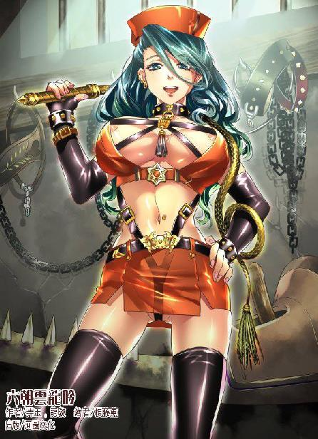

第47集·轩辕秘境
太泉古阵篇（6/7）
出版日期：2013-08-08
【本集内容简介】
当初答应王哲的约定，如今终于实现了。程宗扬带着萧遥逸等人在魔墟西边找到了“红色石头”，一番祭拜之后触发机关，竟让他看到六朝最根本的秘密，以及牵扯到星月湖、太乙真宗、光明观堂的秘闻！
潘金莲欲讨回乐明珠，不停地追杀程宗扬，众人被逼之下，意外进入摄影机影片里的那座人类城市……
※ ※ ※ ※ ※

封面人物：尹馥兰
阴暗的天际乌云密布，暗红的闪电在云层中穿梭。天穹伤口般的裂隙间，不时有零星的火山砾石带着火焰缓慢掉落，宛如一片片燃烧的羽毛。
乌云越来越浓，仿佛压在高架桥上。一阵狂风掠过，暴雨倾盆而至。一道巨大的闪电贴着桥身射下，蜿蜒的光芒纵贯天地，映出风中纷乱而密集的雨滴。整个世界都仿佛被狂风和暴雨充斥。
硕大的雨点坠落下来，在玻璃上溅起漫空水花。程宗扬靠在宽大而柔软的座椅上，小紫蜷着身偎依在他怀中，发出柔细而均匀的呼吸声。外面狂风呼啸，暴雨滂沱，车厢内仿佛另外一个世界，干燥、温暖而又宁静，充满温馨的气息。
又一道闪电落下，沉闷的雷声仿佛从车顶滚过。程宗扬从睡梦中醒来，手臂微微一动，又连忙停住。他看着小紫宁静的睡容，一根一根数着她弯长的睫毛，丝毫不觉得厌倦。
雷声不断响起，程宗扬忽然想起莫如霖还在后备箱里，不由心下一惊，这么久不会把那家伙给闷死吧？
程宗扬动了下手臂，右臂仍然又困又麻，沉甸甸地举不起来，只好用左手抱起小紫，轻轻放到一边。
和庞大的车身一样，汽车的后备箱也极为宽大，里面似乎有通风设置，莫如霖在里面不但没有闷死，反而鼾声如雷，睡得正熟。这位黑道枭雄半张着嘴巴，口水滴在身上也浑然不觉，脸上看不到曾经的惊惶、恐惧、笑里藏刀的阴险和冷酷，而是一种解脱感，仿佛如释重负，连睡梦都变得轻松起来。
关上后备箱，程宗扬飞快地跑了回去。短短一会儿工夫，身上已经湿透，从头到脚都浇得落汤鸡一般。他拉开车门，微微一怔，然后笑道：“你醒啦。”
小紫蜷着腿依在椅中，一双美眸犹如寒星，随着窗外划过的闪电微微闪亮。她没有作声，只伸手帮他解开衣物，把湿衣叠好，用一块丝帕把他身上的水迹抹干，然后搂住他的腰，把精致的玉脸贴在他赤裸的胸膛上。
鼻端飘来淡淡的幽香，程宗扬把下巴埋在小紫柔软的发丝间，心头慢慢沉静下来。
“痛吗？”
“当然痛。”程宗扬有气无力地说道：“死丫头，万一我要是残疾了，下半辈子可就指望你了。”
小紫轻笑道：“好啊。”
程宗扬活动了一下肩膀，“要有赤阳圣果就好了。”
“如果有，你舍得吃吗？”
“废话，那也太浪费了。肯定要留到保命的时候吃了。”程宗扬狐疑起来，“死丫头，你不会手里有吧？”
小紫摊开手，“可惜没有。”
“反正知道它在哪儿长着，回头我们去把它连根刨了，带回家种。”
“人家已经去刨了，”小紫充满遗憾地说道：“可惜整个楼里的赤阳藤都枯萎了，死得不能再死了。”
程宗扬讶道：“怎么会这样？”
小紫失望地说道：“谁知道呢。”
“没关系，”程宗扬安慰道：“说不定下次来，它又发芽了呢？”
外面的暴雨越来越大，车身连同车下的桥梁都仿佛飘浮起来，在水中摇荡。桥下那座被人遗弃的城市仿佛浸在水底，偶尔有几盏路灯，在黑暗中顽强地散发着光芒，折射出古怪的泡影。
这会儿在桥上俯瞰魔墟，程宗扬忽然心下一动，朱老头当年追着岳鹏举进入太泉古阵，王哲会不会也是如此？王哲曾说那块赤红色的石头是在太泉古阵的西边，但自己知道，太泉古阵是分层的。如果他是和岳鹏举一起通过传送阵进来，会不会把这处魔墟当成整个太泉古阵？
换个角度来想，师帅既然直接提及那块红色的石头，那么它在太泉古阵必定是一个标志性的存在。可无论外姓人还是徐君房都不知道它的位置，除非它是在魔墟里面。
“魔墟！”程宗扬道：“那块红色的石头是在魔墟的西边！”
小紫想了一下，“去看看就知道了。”
程宗扬望着窗外的暴雨，“没太阳，怎么找方向呢？”
小紫指着仪表盘道：“这里有啊。”
程宗扬拍了下脑袋，“先把老莫送回去！”
※ ※ ※ ※ ※
“兄弟，”莫如霖把一件沉甸甸的物品塞到程宗扬手中，“这对赤金护腕里面刻有移山和飞羽两种法诀，戴在腕上，便是数十斤重的大刀也轻如鸿毛。”
程宗扬道：“什么意思？”
莫如霖低声道：“兄弟是明白人，一会儿给个面子……”
程宗扬明白过来，笑道：“好说！”
莫如霖松了口气，随即收起嘻笑，摆出一脸深沉的表情，双手负在身后，稳稳踱着步，流露出黑道霸主般精明而又霸道的气势。
停车场偌大的空间中闪动着星星点点的火光，各方势力正在对峙，吵得一片声响。与程宗扬离开时相比，局面已经大不相同。左边是实力最为庞大的周族，为首的是焚无尘、周飞；右边则是人数不逊于周族的外姓人，挑头的是宋三和几名护卫；最后一方是以法音寺为首的佛门诸寺，虽然人数少了许多，但群僧法度森严，任谁也不敢小看。另外还有几股零星势力，如实力大损的道门诸宗，已经不成气候，只能充当旁观者。
众人目光的焦点，却是场中一名老者。周族的大主灶昔名博趴在地上，癫头陀双目圆瞪，一膝压在他背上，一手卡着他的脖子，一手塞在他嘴里，像是在掏什么东西。
萧遥逸蹲在旁边，劝道：“吐出来吧。”
昔名博毅然摇头。
“这么多人盯着呢，你能撑到什么时候？”
昔名博一脸的大义凛然，对他的劝解充耳不闻。
萧遥逸摊开手，对普济等人道：“这没办法了。总不能把他肚子剖开吧？”
“阿弥陀佛！”普济宣了声佛号，然后沉声道：“既然如此，小僧便把他带回寺中，在佛前决断。”
“谁敢！”周飞一声断喝。
“少主说的对！”宋三在人群中扯着嗓子道：“我等便与周族联手，先灭了这帮贼秃！”
“杀！杀！杀！”外姓人唯恐天下不乱地鼓噪起来。
一个声音淡淡道：“什么事，这么热闹啊？”
外姓人像找到主心骨一样一片欢呼，宋三排众而出，叉手道：“莫爷！”
“急什么？”莫如霖神情从容地摆了摆手，“慢慢说。”
宋三凑到他耳边，小声嘀咕起来。
另一边，信永像见了亲人一样拉着程宗扬就不松手，声泪俱下地说道：“大哥，你要给小弟作主啊！”
程宗扬也莫名其妙，“怎么回事？”
癫头陀吭哧两声，正想开口，就被信永啐到脸上，“滚！你个废物！”
癫头陀讪讪地闭上嘴，手上卡得又紧了几分。
眼看昔名博被掐得直翻白眼，随时都会被他掐死，程宗扬赶紧劝道：“有话好好说——到底怎么回事？”
“大哥，你不是把琉璃天珠给癫师弟了吗？这家伙活活就是个废物！”信永痛心疾首地说道：“珠子攥在手心里还没暖热，就被人追上了，小弟赶紧来接，这废物眼见脱不了身，就把珠子扔过来——谁成想这个杀千刀的老东西正好跑到中间，跳起来就要叫阵，天可怜见啊！癫师弟这废物活活就把我们这佛门重宝扔到了老东西的狗嘴里……”
“不至于吧？都什么时候的事了，你们折腾这么久？”
“开始我们人多，后来周族人多，起初打了两场，谁都没捞着好，再后来外姓人也来了，一直折腾到现在。”
程宗扬原以为自己的把戏早被拆穿了，没想到峰回路转，竟然还有这么离奇的转折。琉璃天珠据说是高僧转世的至宝，佛门诸僧已经丢了佛祖舍利，对这颗琉璃天珠丝毫不容有失。而周族这边，琉璃天珠无论是对焚无尘，还是他们背后的晴州总商会都意义非凡，更是不肯让步。现在“琉璃天珠”在昔名博肚子里，昔名博却在癫头陀手里——佛门诸寺和周族算是彻底杠上了。
周族虽然人数众多，但少了严森垒和庞白鸿这两个真正的主事者，单靠一个周飞，能不能驾驭这些来自不同门派的江湖人物，只怕要打一个大大的问号。而佛门的法音、娑梵、佛光诸寺都在十方丛林名下，人数虽然比不上周族，但凝聚力非凡，尤其是里面很有些敢于玩命的狂信徒，真打起来，任谁也得掂量掂量。至于那些外姓人，则是不遗余力地在中间煽风点火、挑拨是非，恨不得两边赶紧打个血流成河，他们好来捡便宜。
双方吵得不可开交，有人叫道：“琉璃天珠是我们少主先得的！正该归我们周族所有！”
周族众人同声应和，“正是！正是！”
普济和尚振臂而呼，“佛门重器岂能落于他人之手！”
诸僧齐声喝道：“护我佛宝！”娑梵寺几名和尚叫得尤其响亮。
周飞扬声道：“既然是佛门重宝，自然是有缘者得之。琉璃天珠乃是周某所得，眼下又落在大主灶身上，可见佛宝的缘份正在我们周族！”
这句话一出来，周族众人纷纷称是，连旁观的道门诸宗，如沈黄经等人也微微点头。
普济禅杖往地上一振，杖端几只铜环锵然作响，森然道：“外道之徒，也敢妄谈佛缘？”
另一名僧人踏前一步，寒声道：“非是我佛信众，竟然敢口称佛旨，妄谈佛理——亵渎我佛，莫此为甚！”
程宗扬刚听到周飞的话，还觉得这位周少主有几下子，拿缘份说事，堵住众僧的嘴巴，没想到这些和尚的反应会这么激烈，非是佛教徒敢谈佛理的，直接就被他们打成外道。言外之意，只有十方丛林才是佛经的唯一解释者。对话语权的争夺强烈到这种地步，与自己印象中的佛门大相径庭，这么搞下去，恐怕要不了多久就会出来个佛教版的宗教裁判所了。
周飞显然也没弄明白自己并不出格的一句话为什么会激起这么大反应，微一愣神，随即喝道：“何必饶舌？要打便打！”态度强硬之极。
普济毫不示弱，“如此甚好！”
“且慢！”黎锦香道：“敢问莫爷，今日之事，贵方是否还要插手？”
莫如霖这会儿已经被一众护卫牢牢护住，听到那个穿着宫装的少女开口，他微微挑了挑眉。眼下周族与佛门诸寺不相上下，作为第三方势力的外姓人态度如何，显得十分重要。而他早已表态，绝不允许琉璃天珠落到广源行手中，周飞等人都心知肚明，黎锦香故意提及此事，并不是健忘，而是借此提醒佛门诸寺，当心外姓人平白作了得利的渔夫。
普济等人不知道莫如霖与周族已经有过一番争夺，闻言果然露出戒备之色。
莫如霖心下冷哼，这黎门主年纪不大，却是颇有心计，他淡淡道：“黎门主既然问起，莫某不妨明说：今日之事，我等唯以程公子马首是瞻。程公子怎么说，我们便怎么做。”
此言一出，场中一片哗然。如今苍澜汇聚了各门派的头面人物，有不少放在江湖中也是响当当的角色，相比之下，程宗扬一行毫不起眼，谁也没想到苍澜本地的地头蛇会一边倒地表明立场。
信永大喜过望，深觉自己这次的大腿实在抱得正确无比。焚无尘虽然不动声色，眼神却愈发阴狠。唯有周飞仍是傲气凌人，似乎世间没有任何事物能让他低头。
莫如霖在外姓人中的威望果然不是吹的，宋三等人虽然不明白其中的原委，但没有一个人质疑大当家的决断。
众人视线都落在程宗扬身上，接下来应该由周飞出面，但那位周少主只是不屑地冷笑一声，黎锦香只好道：“程公子的意思呢？”
程宗扬左右看了看，忽然道：“光明观堂的潘仙子呢？”
众人目光刷地往角落里望去。潘金莲戴着面纱，一双美目沉静如水。
程宗扬笑道：“让我说呢，咱们先把那东西取出来，看清楚到底是不是佛门重宝再说。光明观堂擅长外科，不如由潘仙子操刀，替大主灶剖腹取珠。以潘仙子的医术，想必大主灶不会有性命之忧吧？”
潘金莲淡淡道：“两成。”
大家一听，都觉得这主意不错，那颗琉璃天珠并没有多少人亲眼见过，连是真是假都不知道，况且两成机会不算少了。可昔名博却玩命地扭动起来，显然对这个成功率并不满意。
黎锦香道：“有没有稳妥一些的法子？”
萧遥逸道：“我来！我也学过医术，多的不敢说！三成把握还是有的。”
“拉倒吧！”武二郎道：“我还七成呢！老头，要不二爷给你剖一个？保证一刀下去给你个痛快！”
黎锦香心下暗暗着急，她按照广源行的安排，主动接近周飞，这几日相处下来，这位周少主虽然屡屡有惊人之举，却让她大失所望。周飞虽然身居高位，但根本没有意识到自己的角色，他似乎以为自己作为少主，手下人理所当然会向他效忠，至于如何驾驭手下、人尽其材，根本没有在他的考虑范围之内。
焚无尘是广源行请来帮忙的，与周族本身没有半点交情，眼下虽然站在周族一方，但显然心里有自己的算盘。庞白鸿身死，严森垒一去不返，多半是凶多吉少，刚有雏形的周族已经是一盘散沙。如今身在险地，黎锦香再不情愿，也只能勉为其难地站出来。
焚无尘兜帽下的双眼仿佛有火星闪过，如果单是一个癫头陀，他早已出手，只要琉璃天珠在昔名博肚子中，大主灶是死是活对他而言都无关紧要。让他忌惮的是癫头陀身边那名公子哥和那条莽汉。一旦被那两人缠住，那个躲在暗处的老东西绝对不会放过机会。
周飞提枪道：“我周飞永远不会放弃自己的亲朋——以前不会，现在不会，以后也不会！来啊！何人敢与我周飞一战！”
普济左手提起禅杖，右手在胸口画了个“卍”字符，“三世诸佛庇佑！全善全能，唯有我佛！荣耀归于佛祖！阿弥陀佛！”
双方剑拔弩张，一触即发，黎锦香急忙道：“各位听我一言！诸位大师都是佛门中人，慈悲为怀，不若我们各出三人，两场为胜——焚长老、沈道长、信永大师、普济大师，你们看如何？”
“这小贱人！”宋三暗骂一声。
周族与十方丛林的争夺已经成了死局，一旦冲突，必然是不死不休。双方斗得两败俱伤，外姓人自然是喜闻乐见。结果黎锦香提出三场两胜，就算双方打够三场，每场都两败俱伤，外姓人也捡不到多少便宜。
宋三暗自盘算怎么挑动双方恶斗，却听程宗扬一声长叹，“周少主，诸位大师，你们好好商量，何必动手呢？今日之事，我们不再插手，走了！走了！”
程宗扬向萧遥逸使了个眼色，萧遥逸心下会意，一手拉起武二，与程宗扬一起退到圈外。
“青山不改，绿水长流。诸位，后会有期。”莫如霖说了两句场面话，很有风度地拱了拱手，然后带着手下一同退出。
程宗扬说走就走，似乎丝毫没把琉璃天珠放在心上。武二郎却是一脸不甘，“程头儿，就这么算了？”
“那还怎么样？”程宗扬道：“咱们不走，他们怎么打得起来？”
莫如霖欣然道：“兄弟果然高明！来来来，我给诸位介绍一下：边无际、冀飞熊。”
那名使鞭的汉子和铁塔般的壮汉各自抱拳。
“戴松原、柏星辰。”
剑公子和那名使棍的好手揖手施礼。
莫如霖道：“这是我手下四大护卫，修为算是外姓人中顶尖的。”
这几人的身手程宗扬也见识过，比自己只强不弱，想来在江湖上都是成名的人物，可惜被困在苍澜，往日的名声早已湮灭。
“这是宋三，跟随我最久的。”
莫如霖在外姓人一言九鼎的地位立刻显露出来，宋三等人虽然不久前还和程宗扬打得你死我活，但莫如霖一摆明态度，众人丝毫不敢怠慢，连忙上前行礼。
“这位程兄弟是我世交。”莫如霖道：“还记得我给你们说过吗？当年我行走江湖，曾受过东家一番大恩德，连温泉之法，也是东家所授。这位东家，便是程兄弟的长辈。”
宋三等人顿时改容相向，莫爷以前的东家他们虽然未曾见过，但莫爷偶然提及，无不充满仰慕之情，连带的他们也知道莫爷那位东家大有来头，非是寻常人物。别的不说，单是温泉，便不知救了多少外姓人。如果不是温泉之法，任他们身手再高，这十几年下来，不是变成道旁枯骨，便是路边饿丐。说起来，莫爷那位东家应该是所有外姓人的恩人了。
“我藏在库中的宝物，你们也都知道，就是为了有朝一日，能报答东家当日一番恩德。”莫如霖声音哽咽起来，“如今程兄弟的长辈已经过世，这番心意只能落在程兄弟身上……”
宋三连忙道：“莫爷且勿伤怀，莫爷这番心意，老东家泉下有知，必然也是欣慰的。”
莫如霖抹了把热泪，然后道：“此前的误会不必再说，往后我与程兄弟便是生死之交！东家虽然已经过世，但昔日的恩德，莫某与手下的儿郎都不敢忘。从今日起，程兄弟便是我莫五的少东家。”
莫如霖在外姓人中说一不二，此言一出，宋三等人根本没有犹豫便齐声道：“少东家！”
程宗扬道：“莫兄实在太客气了。早知道莫兄困居此地，小弟早便来了。”说着他话风一转，“苍澜这地方虽然不错，但生活多有不便，莫兄久居于此，未免辛苦。”
莫如霖叹道：“苟且偷生罢了。”
程宗扬微笑道：“小弟不才，如今族中商会，正由小弟打理。”
莫如霖一怔，顺着话头说道：“程兄弟果然是年轻有为，东家的商号到了兄弟手里，必然是大展鸿图，财源广进。”
“一般一般。”程宗扬客气两句，然后道：“苍澜商旅难行，大伙儿在这世外桃源虽然过的神仙日子，但免不了缺东缺西。正好小弟在夷陵的商号这几个月就要开张，如果莫兄不嫌弃，我们便专门辟一条到苍澜的商路。”
众人怔了一下，接着惊喜若狂。他们困居苍澜，最盼的就是外面来的商旅。但苍澜不仅道路难行，本地也没有什么出产，太泉古阵的物品能拿的都被拿得差不多了，偶尔找到几件古怪的东西也不知道怎么用，摆在外面还不如假货好卖。
如今镇上假货横行，全靠着太泉古阵的名头，蒙蒙那些好奇的外来人。他们真正发财的手段，其实是在阵中劫杀探险者，也正是靠抢掠的金钱，吸引冀图暴利的商人，用重金换取粮食、布匹，来维持最基本的生存。外面再普通的货物，运到苍澜都是天价，但那些行商的货物卖得再贵，他们也甘之若饴，毕竟人家能进苍澜，都是用命换的。如果有一条定期的商路……这种好事，他们想都不敢想。
莫如霖却是惊多于喜，他是外姓人的大当家，与外来的行商打过多年交道，深知这条商路不是说说那么简单，真要长年走下来，付出的人力、物力绝不是一个小数目。
“兄弟这番好意，哥哥心领了，但专门辟一条商路……”
“莫兄不必担心。”程宗扬胸有成竹地说道：“镇上最缺的无非是粮食，小弟算了一下，如果全靠外面贩运，莫兄每月需要差不多一百石粮。说起来这个数目并不算多，几辆大车便能拉完。但苍澜多是山路，大车无法通行，换成骡马，大概要四五十头，还需要五六个押运的把式。从夷陵到苍澜，路上是一个半月。两支商队轮流走，每走一趟歇半个月，能保证每月有一趟商队过来。如今外面粮价波动很大，但最贵也不超过每石二十银铢。算上两支商队的开销，每石粮食从夷陵运到苍澜，差不多三十银铢。一百石也就是一百五十金铢。”
那些外姓人的眼珠子几乎都快瞪了出来。如果每月真有一百石粮食，众人起码能吃顿饱饭，何况这价格比镇上低了几十倍！
“少东家明鉴，”宋三道：“单是走到苍澜也不甚难，难的是那道雾障，平常人过时不敢说九死一生，可十次也有五次出事。我们这些废人，更是沾也沾不得。这条商路只怕折损太多。”
真要是百分之五十的死亡率，每走两趟，就有一趟死在路上，再赚钱十倍的商路也没人肯走。程宗扬早有计较，说道：“这个也好办，但需要你们出点力气了。”
莫如霖见他把握十足，也激动起来，拱手道：“少东家尽管吩咐！”
“雾障的地形你们熟悉吗？”
众人面面相觑，他们一辈子都毁在雾障上，对苍澜的雾障可以说刻骨铭心，但对雾障地形的了解，他们反而是最少的，绝大多数都是进来一趟就身陷其中，甚至还比不上那些过客，至少一来一回走过两趟。
“我来时注意到，雾障那段路其实是一路下坡，把货物运下来，并不用费太多力气。难的有三点：第一，在雾中目不见物；其次，雾气冰寒不能久待；第三是雾中的异兽会攻击行人。”程宗扬道：“要解决这些麻烦，我倒有个主意。”
说着他话锋一转，“二爷用的东西你们都见过吧？”
众人纷纷点头。
“你们要做的就是把那些铁轨拆下来，注意要完整的，不能弯折损坏。”程宗扬道：“我会派人铺设一条轨道。”
“轨道？”众人都是头一次听说。
“对。把铁轨分成两排固定好，用铁轮车一路就能跑下来。”
众人将信将疑，有人道：“那么细的铁轨，车轮怎么在上面跑？”
程宗扬笑道：“到时你们就知道了。”
莫如霖忽然叫道：“铁路！我听岳……东家说过！”
萧遥逸也露出了然的神情，显然岳鸟人跟他们吹嘘过。
莫如霖连连搓手，“好！好！我怎么早没想到！”
宋三道：“莫爷，咱们就是想到，也干不了啊。”
要辅设轨道，必须进入雾障，这正是外姓人的死穴。
程宗扬笑道：“放心，包在我身上。雾障大概有五里长，一根完整的铁轨是七丈半，一里二十根，全铺下来大概是二百根。铺路的事用不着你们出力，到时我会安排些好手过来，有一个月工夫差不多了。”
莫如霖叫道：“这怎么使得！”
程宗扬笑道：“既然是商路，当然是有来有回。你们在阵中找到的物品，无论好坏，我全要了，只要别拿假货蒙我就行。”
“看少东家说的！”莫如霖大笑两声，接着泪如雨下，“我莫五当年幸得东家照料才有今日，没想到这么多年还要靠少东家养活，我莫五真是没用啊……”说着嚎啕大哭。
宋三陪着掉了几滴泪，哽咽道：“少东家这番大恩大德，小的们粉身碎骨也无以为报……”
后面的外姓人没听清众人的交谈，一番窃窃私语，不多时莫爷的旧东家要专门开一条商路的消息便即传开，顿时欢声雷动。
莫如霖心下别有一番滋味，他躲在苍澜一是愧对岳帅，二来也是避祸，免得被人当成岳逆余党清除掉。苍澜有雾障这个天然的牢笼，镇上的日子并不好过，但为了小命着想，只能咬牙苦捱。这回遇到岳帅的故旧，莫如霖也是豁出去了，把埋在心底十余年的秘密都吐露出来，说完只觉浑身都一阵轻松，想着要杀要剐也就这样了。却不料那年轻人竟然提出专门开通一条商路，这可是天上掉馅饼一样的好事。
“少东家……”莫如霖嚎啕着就要拜倒。
程宗扬赶紧扶住他，“莫兄，你我的交情还用客气？你放心，三个月内，商路必定开通。”
那些外姓人看向程宗扬的眼神都不一样了，目光中充满敬畏和感激，几乎把他当成了救苦救难的活菩萨。
程宗扬心下早有计较，自己计划中要在宋国设立五处钱庄，除了临安的总号和西面筠州的分号，其他三处还在筹建。南边这一处，便设在夷陵。通往苍澜的商路虽然代价高昂，但这点成本自己也不至于支付不起。太泉古阵充满秘密，但自己不可能久留苍澜寻找谜底，如果铺成铁轨，太泉古阵的物品就能源源不断地运往外界，说不定真有自己能用的东西。
“铁路吗？”萧遥逸思索道：“如果从江州铺一条铁路到建康呢？”
“想都别想。”程宗扬道：“先不说有没有那么多铁。单是铁轨用的钢，要防锈，要抗压，不会变形，还要求足够的精度，六朝能铸出来吗？”
“如果把太泉古阵的铁轨都弄出来呢？”
“开什么玩笑？”
武二郎道：“你要能弄出来，记得给二爷留两根。”
萧遥逸也知道不可能，如果真把那些铁轨运到外界，自己把它们全炼成刀也不会拿去铺路，那也太浪费了。
忽然众人惊呼起来，却是武二郎打开手电筒，雪亮的光柱顿时把周围的火把都比了下去。
武二郎得意洋洋地说道：“没见过吧？土狗！”
宋三羡慕地说道：“真是好东西。”
“别摸！摸坏了你赔得起吗？”
武二郎一脸得瑟地拿着手电筒左照右照，忽然道：“咦？这不老徐吗？”
徐君房被他拿手电照在脸上，映得睁不开眼，他两手捂着眼睛，扯着喉咙说道：“程头儿！是你们吗？”
“老徐，你怎么跑这儿来了？”
“我在外面等你们，看到光柱才过来……别照！别照……”
程宗扬笑道：“你来得正好，先把这笔生意敲定了。莫兄，请吧。”
※ ※ ※ ※ ※
众人在通道内席地而坐，程宗扬拿出纸张、炭笔，由熟知苍澜内情的徐君房协助，与莫如霖为首的外姓人谈定了交易内容。一旦商路开通，盘江程氏将每月派遣一支商队，运送不低于一百石的粮食、盐巴、布匹等货物，以市价结算。外姓人从太泉古阵取得的各种物品，由商队统一收购，价格由双方协商。程宗扬特别强调所有的物品必须完整，以避免外姓人对太泉古阵无节制的破坏。
外姓人在镇上自成一体，徐君房虽然是土生土长的苍澜人，与他们的交往也不深。这位程头儿居然坐下来跟他们谈生意，已经让他大出意料，外姓人把姿态放那么低，张口闭口都称他为少东家，透出十二分的尊敬，更让他理解不能。不过徐君房也不含糊，靠着自己对苍澜的熟稔，把交易价格订在一个双方皆大欢喜的程度。程宗扬固然觉得白捡的一样，外姓人也喜出望外。从太泉古阵取得的物品既不能吃又不能喝，识货的更是没有，摆出去卖也换不了几个钱。少东家愿意收购，那些外姓人都求之不得。
交易敲定，不仅程宗扬在外姓人心目中地位一时无两，连莫如霖本来就一言九鼎的威望也水涨船高。至于徐君房和武二郎，都少不了人巴结。
萧遥逸把莫如霖拉到一边，私下交谈几句，莫如霖指天发誓，自己虽然有负岳帅的嘱托，但绝没有背叛岳帅的念头，萧遥逸才悻悻罢手。
程宗扬把徐君房留下来继续商谈交易的细节，自己和萧遥逸、武二郎一起回到岳鹏举曾经住过的那处房间。
左彤芝守在入口处，见到程宗扬过来才松了口气，“你们去了一个多时辰还不见回来，朱大爷说去找你们，不知遇到没有？”
程宗扬一怔，随即道：“不用管他。老铁呢？伤势怎么样？”
“已经大好了。那位乐姑娘真了不起，”左彤芝佩服地说道：“年纪不大，医术可高明得紧，再歇息几日就没有大碍了。”
铁中宝折断的肋骨已经被复位，用木板牢牢固定住，此时刚刚睡着。乐明珠和阿兰迦倒是出奇的投缘，这会儿凑在一起，“吱吱咯咯”地又说又笑。见到程宗扬进来，乐明珠招手道：“大笨瓜，快来！”
“说什么呢？这么高兴。”
“我要去草原玩！”乐明珠兴奋地说道：“那里有好多马，人家还没有骑过马呢。”
“好啊。”程宗扬看着阿兰迦，笑道：“等小侯爷定下日子去铁勒族求亲，我带你一起去。”
“真的吗？”乐明珠高兴地拉起阿兰迦，“你要做新娘子了？哎呀，我最喜欢新娘子，新娘子最漂亮了！你一定要等我啊。”
阿兰迦晕生双颊，过了会儿才道：“只要他敢去……”
萧遥逸道：“就算被人打断腿，我也要爬到你面前，把你接走！”
“你又胡说！”
武二郎东看西看，没见着白仙儿，正纳闷间，才发现她躺在床上，身上还盖着被子，只露出一双又委屈又愤怒的眼睛。
“这是咋回事？”武二郎掀开被子，见她从头到脚都好端端的，只是被人封了穴道。
刚解开穴道，白仙儿就大哭起来，“二郎！她欺负我！”
左彤芝有些尴尬地解释道：“她吵得太厉害，又要出去找你们。不得已，我才封了她的穴道。”
“她就是欺负我！二郎，你给我打她！”
武二郎一阵头大，索性把她嘴巴一塞，拿被子卷成一个卷，吓唬道：“再嚷嚷，二爷就把你扔掉！”
乐明珠张开手臂拦住他，“不许你欺负她！”
武二郎倒没想欺负白仙儿，不过二爷要的是面子，乐明珠不拦还好，这会儿她一拦就服软，二爷的面子往哪儿搁？武二眼一瞪，蛮横地说道：“我欺负她怎么了！”
“她有娃娃呢。”
房间里整个安静下来，武二郎张大嘴巴，像具石雕一样定在当场。
过了会儿，程宗扬悄悄挑起拇指，低声道：“二爷，神枪手啊。”
萧遥逸抱拳道：“佩服！佩服！”
左彤芝也大是意外，半晌才道：“恭喜二爷了。”
武二郎像没听到一样，呆呆看着白仙儿，片刻后他猛地一甩头，猛虎般闯出去，没等众人反应过来，便揪着莫如霖进来，“就是她！赶紧走！越快越好！”
莫如霖被他揪着领子，扯得几乎喘不过气来，拼命点头道：“好说好说……我这就让人做担架，把她抬出去……”
“抬个屁！万一摔着了，你赔得起吗？做张背椅，二爷把她背出去！”
“成！成！成！”
程宗扬惊讶地说道：“二爷，你不至于吧？”
“甭废话，这地方乱七八糟的，万一磕着碰着可不得了。”武二郎风卷残云般收拾着东西，一边道：“二爷这就走，先到镇上等着。程头儿，你们赶紧着，别磨磨叽叽的！那个小狐狸，把你的帕子给二爷使使！”
萧遥逸愕然道：“要帕子干嘛？”
“万一出汗了呢？我瞧着就你的帕子还干净些。快点！快点！你不好几条的吗？别娘儿们似的！”
萧遥逸与程宗扬对视半晌，程宗扬长叹一声，“得，二爷这是指望不上了。爹死娘嫁人，随他去吧。”
“二爷真是英雄好汉，说重色轻友就重色轻友，一点都不带含糊的。”萧遥逸一边掏帕子，一边对阿兰迦道：“你和武二一起走。”
“为什么？”
“你们先走，到外面等我。”说着萧遥逸朝程宗扬使了个眼色。
程宗扬配合道：“左护法，趁这会儿还没有乱起来，你们也和武二一起走，在镇上等我们。”
左彤芝毫不拖泥带水，“好。”
程宗扬对莫如霖道：“莫兄，你说那些胡人在林子里？”
莫如霖点头道：“死了几个，剩下的逃到了林子里，我们也没顾上理会。还有个老的，叫乌什么……”
阿兰迦道：“乌护大叔？”
“对对对！他受了点伤……不重！不重！”莫如霖含糊道：“如今在敝处作客。”
阿兰迦犹豫了一会儿，终究是挂念自己族人的安危，对萧遥逸道：“我在镇上等你。”
徐君房道：“我呢？”
程宗扬道：“你跟着我。”
徐君房也不在乎，“成。”
乐明珠道：“我要等师姐。”
“出去在镇上等也行啊。”
“不行。”乐明珠嘟起嘴，“我要自己走了，师姐肯定会生气的。”
程宗扬无奈，“那你也留下吧。”
武二郎根本没理会周围这帮凡人，他像捧着一件易碎的玻璃一样，把白仙儿捧起来，那副小心翼翼的模样，看得程宗扬都想踹他几脚。
莫如霖亲自点了戴松原、柏星辰和十几名好手护送，左彤芝与阿兰迦一起，后面是被人抬着的铁中宝。
萧遥逸拉着阿兰迦依依惜别，乐明珠似乎想起了什么，招手道：“等等……”刚要过去，却被程宗扬一把拉住辫子，她气恼地扭过头，“大笨瓜——”
程宗扬一指竖在嘴边，“嘘。”
萧遥逸将一块玉佩放到阿兰迦手中，“这块玉佩是我萧家世传的兰陵玉，你好好带着——千万别弄丢了。”
本来是情意绵绵的赠送信物，被他郑重其事地加个尾巴，离别时那点伤感立即烟消云散。阿兰迦赌气地接过玉佩，想了想，从颈中扯出一根项链，取下一颗天青色的珠子，塞到萧遥逸手心里，“这是我出生时就带在身上的，让长生的青天作证。”
两人拉着手，四目交投，目光流连间，越来越依依不舍。
萧遥逸忽然道：“这个你也带上。”说着把那只印有岳帅标记的玻璃樽塞到她手中。
阿兰迦一怔，“这不是你要带回去的吗？”
“是啊。”萧遥逸笑嘻嘻道：“你要把它带走，我那几位哥哥就不得不跟我一起去了。”
阿兰迦瞪着他，“你自己就不敢来吗？”
萧遥逸理直气壮地说道：“万一是抢亲呢？人多势众才好抢。”
“你——”
萧遥逸一手托着玻璃樽，一手轻轻一弹，在清越的袅袅余音中，低声吟道：“山无陵，江水为竭，冬雷阵阵夏雨雪，天地合，乃敢与君绝。”
《上邪》出自北地，阿兰迦也听过。她想笑，眼圈却红了，良久才道：“我等你。”
一行人终于走远，程宗扬回头看着一脸不高兴的乐明珠，禁不住捏了捏她圆圆的小脸，“还生气呢？”
乐明珠气恼地白了他一眼。
“他们两个卿卿我我，你过去多不合适？”
“我又不是去找他们。”
“那你叫谁呢？”
“白仙儿啊。”
“你找她干嘛？”
“她的娃娃忘记拿了。”乐明珠拿出一只木偶摇了摇。
咔！程宗扬的下巴直接掉在地上。
“你说的娃娃就是这个？”
“是啊。”
“你难道不是说她肚子里有娃娃了？”
乐明珠脸红了起来，“才没有！你想到哪儿去了……哎呀！武二！”乐明珠终于明白过来，“我要给他解释……”
“千万别！”程宗扬拦住她，“什么都别说！”
武二如果发现自己被人不小心给忽悠了，真不知道会干出什么事来……程宗扬定了定神，看着那只禁魂鬼偶道：“这娃娃怎么跑这儿了？”
“左姐姐在床边找到的，白仙儿说是她的，两个人吵了起来。左姐姐点了她的穴道，把娃娃也给了她。我看她不高兴，还跟她玩过家家，帮她把娃娃哄睡。武二好讨厌，那么大声音，都把小宝宝吵醒了。”
程宗扬终于听明白了。这事说到底还得怪二爷，他怎么就没玩过过家家呢？
“咦？”乐明珠疑惑地拿起木偶，“有毒吗？好奇怪的毒性……”
“小心点，别乱玩。”
“这种毒我从来都没见过呢。”乐明珠飞快地取出银针、银匕、棉球、验毒粉……兴致勃勃地摆弄起那只玩偶，一边道：“说不定是一种从来没有记载过的毒物，我是第一个发现的呢！我要叫它乐氏娃娃毒！”
看着小香瓜兴奋的小脸，程宗扬都不忍心告诉她真相。好在禁魂鬼偶的毒性也不致命，她想玩就让她玩好了。
众人离开，原本热闹的房间里冷清下来。莫如霖站在门边，有些敬畏地望着房间中的陈设，“这里……是岳帅住过的？”
“大概是吧。”程宗扬提醒道：“回头最好让人把这里封起来。”
莫如霖心领神会，“少东家放心，莫五省的。”
“对了，我们有位朋友，叫宁素的，因为此前的误会下落不明，还要麻烦莫兄帮忙寻找。”
莫如霖赶紧找手下问明情况，原来宁素受伤后一直跟着凉州盟，古阵外的混战中，凉州盟被打散，宁素也落到外姓人手里。莫如霖拍着胸膛道：“少东家放心！这事包在我莫五身上！”
程宗扬放下一件心事。至于惠远小和尚，虽然没有见到，但刚才看到十方丛林诸僧中有佛光寺的名号，想来他有同门照料，应该没事。
程宗扬扭过头，“小侯爷，人都被你送走了，这会儿该说了吧。”
萧遥逸笑道：“知我者，程兄也。”
萧遥逸毫不客气地拿过纸张、炭条，边写边道：“周族由十几个帮派势力组成，少则数人，多则数十人，刚才在场的一共是一百四十三人。十方丛林来了五座寺院，和尚、沙弥加起来九十六人。道门诸宗和其他一些零星势力三十七人。加上其他散在阵内的势力，大概在三百人上下。”
程宗扬摸着下巴道：“什么意思？”
“很简单。”萧遥逸在纸上重重一画，“一网打尽！”
程宗扬吓了一跳，“小狐狸，你怎么突然变得这么暴力了？”
“周族那小子你难道看他顺眼？还有那帮捧着佛经砍人的秃驴！”萧遥逸手一挥，“干掉他们才是为世间除害。”
“你数过咱们有几个人吗？武二爷刚拍拍屁股走人，还剩你、我、小紫、死老头，加上老徐也才五个人。三百对五个——谁把谁一网打尽啊？”
萧遥逸笑道：“还有莫五呢。”
莫如霖有些犹豫，毕竟外姓人的实力参差不齐，玩点阴险的手段还行，真要硬拼，三百对三百，谁能赢还不一定呢。
萧遥逸打开折扇，“那些人多半都是岳帅的仇家。”
莫如霖一拳擂在腿上，断然道：“不能放虎归山！”
“先别急。”程宗扬道：“我先问一下：莫兄，岳帅在太泉古阵的事，到底是怎么传出去的？”
“小的也是外面人进来才听说的。”
“以前有过吗？”
“绝对没有。”莫如霖道：“这几日来太泉古阵的人，比平常两年都多。我们在阵上这么多年，真没有什么能瞒过我们外姓人的耳目，可偏生这样的大事，我们事前半点风声都没听到。”
“依我看，岳帅这事只是个谣传。”程宗扬道：“可为什么要造这种谣？又是谁造的谣？”
萧遥逸经过这几日的搜寻，对岳帅在太泉古阵出现的事也已经死心了，“能把这么多不同势力的人都骗过来，这个造谣者不简单。”
莫如霖道：“会不会是广源行干的？故意把各帮派召集过来，好清除异己，给周族铺路？”
“那广源行没理由把道门诸宗和十方丛林都骗进来啊？”
莫如霖推测道：“也许是给周飞造势？借着各方势力，宣扬周族少主？”
萧遥逸道：“那也不该选太泉古阵——姓周的长的就是张倒霉脸，他要中了诅咒，广源行还不全赔进去？”
程宗扬摸着下巴，“那会是谁造的谣？”
身后传来一声轻笑，“明知道是谣言，造谣的肯定不会来。那么谁没有来，谁就是造谣的。”
看着从暗处走出的少女，莫如霖脸色微微一变，赶紧又堆起笑容。
程宗扬和萧遥逸异口同声道：“黑魔海！”
“光明观堂和龙宸都有人上钩，只有黑魔海的人没露面。”萧遥逸道：“如果岳帅真在此地，最着急的恐怕就是黑魔海。除非是他们放出的谣言，否则绝不会到现在都没有动静。”
“这是冲我来的啊！”程宗扬一想就通，顿时一阵火大。自己在临安打听赤阳圣果的事并不算秘密，黑魔海肯定知道自己要来太泉古阵。剑玉姬那贱人刚与自己达成协议，全面退出宋国，转脸就放出谣言，不废吹灰之力，便把岳鸟人的仇家都引到太泉古阵。如果不是周飞横空出世，吸引了太多目光，自己一行早就成了众矢之的。
程宗扬心头升起一股强烈的不安，如果是别人布局，顶多是引来一堆麻烦让自己头大，可操盘者是剑玉姬，那就不同了——这贱人肯定有后手！
那么剑玉姬的后手是什么呢？程宗扬刚想了一下就立即放弃猜测。如果自己能凭空猜到，她也不是剑玉姬了。
“小侯爷，你的计划要改一改。”程宗扬道：“那帮岳帅的仇家，咱们一个都不动，而且也不能让他们打起来。”
萧遥逸也明白过来，他虽然没有接触过剑玉姬，但对她的手段也多少了解一些。既然剑玉姬设下这样一个圈套，最明智的做法就是别跳进去。
“糟糕！他们不会已经打起来了吧？”程宗扬道：“赶紧让人去看看，还有多少人活着。”
小紫笑道：“已经没有人啦。”
程宗扬一脸不信，“这么快就死完了？”
“没有啊。”小紫笑道：“岳鹏举出来了，他们都去追姓岳的了。”
萧遥逸和莫如霖都脸上变色，程宗扬却沉下气来，“死丫头，这是你搞的鬼吧？”
小紫笑吟吟道：“谁知道他们那么好骗？”
“大哥——”
外面一声撕心裂肺的哀嚎，信永扑过来抱住程宗扬的大腿，哭天喊地地叫道：“你要给小弟做主啊……”
“怎么了这是？”
信永一把鼻涕一把眼泪，几乎哭岔了气，嘴皮子倒是一点都不耽误，“癫师弟那个废物！被人骗了啊！大哥！”
程宗扬喝道：“好好说！”
“大哥，你这边带着人刚走，我们和姓周的那帮人就忙活起来了。姓周的打过来，我们打过去，姓周的又打过来，我们又打过去……我瞧着不是个事，叫癫师弟带着咱们的琉璃天珠赶紧先避避。这一避就出事了——癫师弟刚走没多远，就碰见一人，说是卖琉璃天珠的。癫师弟不是缺心眼吗？可再缺心眼也知道这事儿不对。谁家的琉璃天珠摆个地摊卖啊？癫师弟就没理，拿着咱们的琉璃天珠接着走。刚走两步又碰见一老头……”
“朱老头？”
“可不是嘛！癫师弟一看这眼熟啊，刚见过不是？随口打了个招呼，问老头干嘛呢？老头说听说这儿有人卖琉璃天珠，过来瞧瞧。癫师弟说那是骗人的，千万别去。老头说不怕，十文钱一个，便宜！摊主还说了，如果是假的，赔三个！癫师弟一听就心动了，跟老头一起一人掏了十文钱，买了一盒。到没人的地方打开一看……”信永嘴巴哆嗦着伸出四根手指，“四颗，足足四颗……”
“癫师弟数了一遍，然后就疯了，老头怎么劝都不行，他把周族那个吃了咱们琉璃天珠的老东西往老头那儿一扔，就去找卖珠子的算账……”说到伤心处，信永哭得舌头都打结了。
程宗扬替他说道：“癫头陀赶过去一看，没人了，回来再一看，人没了，是不是？”
“大哥！又让你说着了。癫师弟回来一瞧，你们那朱老头被人狠打了一顿，人都翻白眼了。周族那个老东西……”信永哭道：“连他肚子里的琉璃天珠都没影儿了。”
徐君房道：“卖珠子的是谁啊？”
信永泣不成声，指着旁边一人，咬牙切齿地喊道：“就是她！”
小紫无辜地说道：“我已经赔给他了啊。假一赔三，一共是四颗啊。”
“小妖精！你骗了贫僧的佛珠，又骗了癫师弟的琉璃天珠！你还给我！”
“佛珠是你送给我的。至于琉璃天珠嘛……”小紫摊开一只小手，“你说是我骗走的，有证据吗？”
信永顿时语塞。
小紫道：“小心我告你诽谤哦。”
“大哥啊！冤……啊……”信永抱着程宗扬的大腿又嚎啕起来。
程宗扬右手伸到怀里，然后递到信永面前。
信永眼睛顿时直了。一颗滚圆的珠子躺在他掌心，珠内仿佛有一道微微滚动的彩虹。
程宗扬手掌一翻，琉璃天珠直掉下来。
信永扑过去，抱住那颗琉璃天珠，惨叫道：“佛爷爷啊——”
“再嚎一声，我就把它砸了。”
信永立刻闭嘴。
“什么都别问，这颗珠子你拿好。记住，这不是给你的，是我施舍给娑梵寺的。”程宗扬道：“如果让人知道琉璃天珠在你手里……嘿嘿……明白了吗？”
“懂！懂！”
信永小心翼翼把琉璃天珠塞到袈裟里，想想还不放心，又掏出汗巾，把珠子密密包好，绑在肩膀上，藏在腋下，这才觉得安全些。
信永真是什么都没说，他俯下身，右手、左手、双膝先后着地，然后额头贴在地上，接着翻过双手，捧起程宗扬一只脚，郑重其事地行了一个五体投地的大礼，这才爬起来。
“大哥，你肯定是菩萨转世！”信永斩钉截铁地说道：“必须的！”
“行了，把你的人叫上赶紧走。少趟这漟浑水。”
“菩萨哥，你到长安，千万要来找我啊。”信永道：“我们娑梵寺就在长安城南，渭水边上，不认识路不怕，到河边随便找个人问问，你们给谁种地的？他指的地方就是我们娑梵寺。”
徐君房道：“你们地方挺大啊。”
“何止是大？”信永道：“那地方，我就是天！这么跟你说吧，周围几十个村子，你想在谁家门口拉屎，尽管拉！只要说是我小永的兄弟，谁都不敢说个‘不’字！”
信永拍着胸膛，越吹越上劲儿。如果让这两个忽悠一起进入状态，程宗扬想想就头皮发麻。
“赶紧走！”
“那我走了啊……”信永依依不舍地说道：“菩萨哥，你一定要来啊！”
※ ※ ※ ※ ※
信永一步三回头地走远，萧遥逸道：“圣人兄，琉璃天珠啊，你就这么给他了？”
“你想转世吗？”
萧遥逸道：“转世之说，太过玄虚。我是不信的。”
“那不就结了。”程宗扬道：“琉璃天珠留咱们手里，绝对是祸害。东西不在好坏，而在于是否有用。咱们现在刚起步，为了一件用不上的东西引来一堆麻烦，还不如扔了。”
莫如霖抚掌道：“少东家说的好！”
信永捧臭脚的功夫炉火纯青，莫如霖的火候也不差，程宗扬苦笑道：“信永刚走，你就让我消停会儿吧。”
莫如霖从善如流，不再提这事，问道：“少东家，眼下的事该怎么办？”
“你们的人路熟，让他们四处找找，把外面的人都领出去。”
“如果他们还打着呢？”
“周族和十方丛林争的是琉璃天珠。现在一边拿了珠子，一边有了大主灶。如果还有人打，你们就别管了。”
“是。”
莫如霖去安排人手，剩下程宗扬、萧遥逸、徐君房和小紫。萧遥逸本想大杀一场，这会儿意兴阑珊道：“早知如此，我也跟二爷一起走了。”
“据说这里有一个通向外面的传送阵，你不想看看吗？”
萧遥逸顿时来了兴趣，“在哪儿？”
“我先看看图。”
程宗扬拿出自己拓下的图案看了起来。小紫进了室内，不一会儿抱着乐明珠出来，笑道：“程头儿，你的小香瓜睡着了呢。”
差点忘了小香瓜还在研究乐氏娃娃毒呢，程宗扬把乐明珠接过来，一边道：“老徐，你来看看这图，找找有没有眼熟的。”
徐君房一头雾水地看着那些图案，程宗扬按照朱老头教的手法试了一下，居然没能驱散毒素，真不知道她是怎么中的毒。好在小香瓜气息、体温一切正常，就是睡熟了。
徐君房看了半晌，“没见过这东西……看着有点像海外的铜钱？”
程宗扬无奈，只好收起拓下的图案，“摸吧咱们。”
四人一边说一边离开房间，刚走出那条挖出的弯道，便看到宋三像只皮球一样一路滚进来，“砰”地撞在墙角，半晌没爬起来。
莫如霖脖子扬得高高的，颈中架着一柄长剑，态度却是不卑不亢，神情镇定地说道：“仙子修为非凡，在下佩服。但仙子便是杀了在下，我莫五也绝不会出卖少东家！”
程宗扬鼻子险些气歪，“干！人你都领来了，还演什么呢？”
“少东家，她一来就直奔这边，真不是我带来的啊！”
这话倒不是撇清，潘姐儿回来找乐丫头，当然是直接朝这边走。遇到外面有陌生人，立即出手劫下要紧人物——潘姐儿出手够果断的。
程宗扬肩上伤势未愈，也就勉强能抱抱乐丫头，动手根本不用想。潘姐儿回来肯定没别的事，就是要人。可自己刚和小香瓜见了两面，无论如何也不肯就这么把她交出去。
程宗扬当机立断，“小狐狸，看你的了！”说罢抱着小香瓜，飞身就走。
潘金莲踢开莫如霖，长剑微微一沉，然后蓦然挑起，身形仙鹤般朝程宗扬掠去。萧遥逸手中折扇“唰”地张开，脚下像踩在冰上般一滑，截住她这一剑，叫道：“光明观堂的臭丫头！小爷想揍你不是一天两天了！”
“滚开！”
潘金莲长剑被折扇挡住，她腰肢微拧，接着一招鹤舞星空，剑光闪动间，仿佛绽放出无数星光。
萧遥逸手中折扇犹如斧轮横挥过去，将星光一荡而空，重重斩在剑上，一边嘲笑道：“腰扭得真不错，这一招是燕姣然在床上跟我们岳帅学的吧？”
潘金莲微微一怔，眼中随即露出怒火，她长剑波浪般攻出，接着皓腕微旋，一点寒光从层层剑波间飞起，仿佛一只卓然不群的野鹤，孤傲地张开羽翼，剑光所及，将萧遥逸半个身体都笼罩在内。
这招鹤鸣九皋是蓄力而为，萧遥逸虽然不惧，手中的折扇却敌不过那柄来自光明观堂的名剑鹤侣，扇面“砰”的一声破开。
萧遥逸屈指一弹，一枚扇骨疾射而出。潘金莲左手玉指扬起，像拂开一朵鲜花般将袭来的扇骨弹开，右手长剑去势不变，刺向萧遥逸颈下。
萧遥逸折扇一合，精钢制成的扇骨挡住剑锋，然后握住扇柄，像握着一根点穴橛般点向潘金莲的手腕。
两人交手极快，潘金莲急于救下师妹，却没想到这个看似纨绔的公子哥儿竟然如此棘手，虽然自己倚仗鹤侣剑占据上风，却一连数招也没能冲开他的拦截。
就在这时，黑暗的大厅中猛然亮起两道光柱，接着一只庞然大物仿佛盘踞多时的怪兽，悄无声息地蹿出。
程宗扬放下车窗玻璃，对萧遥逸叫道：“上来！”
潘金莲和萧遥逸同时掠起，半空中又交手数招，潘金莲倚仗鹤侣剑的锋芒，终究快了一步，比萧遥逸抢先一线掠到车旁。
程宗扬赶紧升起玻璃，叫道：“快走！”
宽大的驾驶席上，小紫的身影显得娇小而又可爱，然而那头巨大的钢铁怪兽在她手下却驯服无比，程宗扬话音未落，车身便猛然加速，把堪堪逼近的潘金莲甩开。
“这边！”程宗扬从另一侧露出脑袋，朝萧遥逸叫道。
萧遥逸心下会意，叫道：“臭丫头！看小爷的穿心掌！”
说着萧遥逸抬掌与潘金莲力拼一记，借势飞开，掠到另外一侧。程宗扬抖开绳子，从窗中甩了出去。萧遥逸一把接住绳索，接着提气轻身，仿佛一片树叶附在绳上，没有半分重量。
汽车在黑暗中飞奔，片刻后，前方有人叫道：“九天玄兽！快闪开！”
周族已经在这怪兽口中吃过几次苦头，看到怪兽扑来，顿时一片鸡飞狗跳。
几名僧人也为之愕然，接着一名和尚喝道：“何方妖孽！还不伏我佛法！”
灯光过处，映出周飞、黎锦香、普济等人惊骇的眼睛。接着高大的车身微微一震，干脆利落地将那个拦路的和尚辗到车下。
周围惊呼声响成一片，眼看后面潘金莲还紧追不舍，程宗扬索性叫道：“岳鹏举在此！谁来杀我！”
正在四处搜寻岳鹏举的众人顿时一片哄然，随即一窝蜂般追来。
车速不断攀升，不多时便冲出空旷的地下停车场。外面暴雨已经停止，湿淋淋的路面仿佛一条黑色的丝带，伸向浓云满布的夜空。
徐君房趴在车窗边，一边望着外面一边惊叹道：“这简直是在天上飞啊！”
“什么叫简直？”程宗扬道：“后面那才是真飞呢。想不想来一个？”
“算了算了。”
程宗扬把头伸到车窗外，叫道：“小侯爷，你还玩呢？”
车外狂风吹得人眼睛都睁不开，萧遥逸却是如鱼得水，他一手握着绳索，一手张开，仿佛一只矫健的苍鹰在风中飞翔。他身体猛然侧翻，从桥上直飞下去，像钟摆一样荡了半圈，然后猛地一跃，一飞冲天。
萧遥逸放声大笑，玩得不亦乐乎。他的发冠早已掉落，披散的头发在呼啸的狂风中飞舞，几乎触到路灯的刹那，他灵巧地一旋，长绳横着扇形荡开，惊险无比地紧贴着灯柱掠过。
萧遥逸一边恣意地上下飞舞，一边高声道：“两岸连山，略无阙处。重岩叠嶂，隐天蔽日，自非亭午夜分，不见曦月！至于夏水襄陵，沿溯阻绝。或王命急宣，有时朝发白帝，暮到江陵！其间千二百里，虽乘奔御风，不以疾也！”
程宗扬肩上有伤，手臂无力，本来想让小狐狸自己爬过来，谁知道那小子把自己当风筝玩得上瘾，居然在空中玩起了冲浪。玩就玩吧，还整这么风骚。程宗扬实在是不能忍了，一手拽住绳索，盘在前方的座椅靠背上，咬牙切齿地把那小子扯进来。
回到车内，萧遥逸还一脸的意犹未尽，眉飞色舞地说道：“下次再玩，绳子再长一些，速度再快一些就好了。”
“还下次呢！下次我把绳子一砍，让你飞个痛快。”
萧遥逸大笑道：“唯愿肋下生双翼，一跃飞上白云巅！”
徐君房往后面看了看，咂嘴道：“还追着呢，真厉害！”
程宗扬道：“死丫头，你故意的吧？”
小紫笑道：“程头儿，你说过不能超速的。”
程宗扬看看时速，都一百一了，此时汽车早已驶出城市的范围，后面追来的大队人马大都甩得不见踪影，车后只有寥寥几个身影。
相比之下，潘金莲修为明显要高上一筹，她掠上围栏，身形宛如一只白鹤翩然飞舞，丝毫不显疲态。原本在前面的周飞这时差不多被她甩下一里地，那家伙双手抓着胸前系枪的绳子，身体像俯到地上一样向前倾斜，速度居然也不慢。再后面是普济，那个狂信徒轻身功夫只能说中上，耐力却是极好，被他甩在后面的人中不乏轻功出类拔萃之辈，但最多坚持三五分钟就已力竭。
“路遥知马力，”程宗扬赞道：“潘姐儿真是一匹好马啊。”
正臭屁呢，车身猛然一沉，变成下坡。后面追逐的几人借助地势，速度又都快了几分。程宗扬回过头，还想拿潘姐儿再过过嘴瘾，眼前的情形却让他大叫一声：“干！”
桥下荒芜的原野不知何时变成了一片碧蓝的海面，桥身像折断般笔直向下，伸进大海深处。
上百米的高度在狂飙的车速下根本不值一提，眨眼间汽车已冲向海面。周围光线一暗，汽车直接冲进海中，眼前却是一条隧道。以为自己要堕海的程宗扬惊魂未定，这设计师不是一般的变态！居然把隧道入口设在海面上！
透过头顶的钢化玻璃，能看到大群大群的海兽在水中游曳。车灯的光芒使这些海兽骚动起来，它们用变异的尖角和利齿撞击着玻璃壁面，发出沉闷的响声。车内众人都不由屏住呼吸，生怕这些巨大的海兽把玻璃撞碎了。
程宗扬虽然明知道这些玻璃抗压能力肯定很强，但也禁不住头皮发麻，催促道：“快点！快点！”
车辆再次加速，很快就把后面几人甩得踪影不见。一盏茶工夫后，眼前隐隐出现一抹光亮，小紫道：“程头儿，前面有两个出口，走哪一边？”
程宗扬看了一下，前面是两条车道，通向两个出口，他灵机一动，把乐明珠的鞋子除下来往车外一扔，“走另一边！”
徐君房挑起拇指，“程头儿，真有你的！”
汽车冲出隧道，周围景物顿时一变。车轮下不再是水泥路，而是一条古老的长廊。两侧矗立着巨大的石柱，需要数人才能合抱的柱身大多已经残破，但残留的柱体依然高达数丈。石柱上覆盖着厚厚的苔藓，依稀能看到上面粗犷的纹饰。充满蛮荒气息的柱体仿佛巨大的图腾，森然林立，伸向头顶浩瀚的星空。
对太泉古阵这种没有规律的时空变幻，众人早已习已为常。程宗扬最关心的是赶紧把后面那几个尾巴甩掉，但面前的道路上到处散落着折断的石柱，汽车东绕西拐，速度根本快不起来。
长廊尽头是一道高大的台阶，每一级都足有半人高。九天玄兽再神勇，也不可能飞上去，只好无奈地停在台阶前，众人弃车步行。程宗扬抱起乐明珠，萧遥逸背着徐君房，飞身跃上台阶。
远处传来海浪的声音，接着一座毁弃的建筑出现在视野中，圆形的穹顶已经残破，仿佛一只敲碎的蛋壳。
徐君房怔了片刻，忽然叫道：“轩辕坟！这是轩辕坟！”
“轩辕坟？什么地方？”
徐君房从怀中掏出一本小册子，翻开指着其中一页道：“就是这个！魔墟之西，有禁魔之海——原来这是西边啊——内有轩辕之坟。上古仙灵未泯，时有仙影出没。风雨之日，常闻鬼哭。”
程宗扬对徐君房的话一句都没听到，两眼紧盯着他手中的册子，目光像呆住一样停留在下面无意中掀开一角的书页上，半晌才道：“这是什么？”
“《河图》啊。”徐君房道：“你不是买了好几本吗？”
程宗扬顾不得打开背包去找，直接把徐君房手里那本小册子夺了过来。
看到有人对自己的东西感兴趣，徐君房也很高兴，说道：“先生说，当日有灵龟从河中负图而出，传下这本《河图》。《河图》在手，坐在室中便可遨游天地，大千世界尽在其中……”
程宗扬直接翻到另外一页，指着上面的图案道：“这是你画的？”
徐君房一眼看到，眼圈顿时一红，“可不是嘛。为了画这幅图，我可没少挨打。尺寸大小一点都不许错，一幅也就罢了，一共九幅呢。画错一点，先生就打我手板。”
程宗扬手里有好几本《河图》，但徐大忽悠卖的假古董，他根本没有仔细留意过。要不是徐君房偶然翻到，他到现在还不知道《河图》里会这样的图案：印章一样的四方形，中间大小不一的黑色方块和空白交替出现，密密麻麻排列在书页上，黑白间似乎蕴藏着无穷的秘密。
程宗扬急切地问道：“这东西怎么用？”
徐君房老老实实道：“不知道。”
“没用过你怎么知道它是宝贝？”
徐君房脸上微微一红，“不是我说的，是鬼谷先生说的。先生说，这东西是无价之宝，让我学会怎么画之后小心藏好，遇到识货的人再拿出来。我等了几十年也没等到识货的，只好画几本卖钱——程头儿，你认识这东西？”
程宗扬无比怀念自己埋在草原里的手机。如果拿手机扫一下，也许会知道这二维码的内容是什么；用肉眼解码，那是一点希望都没有。
程宗扬重新翻开小册子，整本《河图》只有十二页，其中三页画着九幅二维码，其他九页半文半图。最后一幅用拙劣的墨迹画着一座毁弃的台基，台基上方是一个破碎的圆形穹顶，仿佛被砸毁的墓室，旁边写着“轩辕坟”。至于文字，除了徐君房念的几句，剩下是一大段文字艰涩的古文，别说看懂了，自己连字都不认识几个。
徐君房很爽快地承认自己只是比着葫芦画瓢，对内容一窍不通。程宗扬只好道：“小狐狸，你不是读过书吗？看看认识几个字。”
萧遥逸看了半晌，没有多少把握地说道：“我也弄不大明白，意思好像是六合之内，八方之中，这里是天地的中央，用来禁锢魔鬼、祭祀天神的地方……”
程宗扬心里直嘀咕：魔鬼？难道是师帅大展神威，把魔鬼镇压在这地方，又弄块红色的石头，让自己来祭祀？
已经到了这里，真有魔鬼也得去看个究竟。程宗扬收起《河图》，加速掠了过去，视线绕过建筑的外壳，入目的色彩便使他心头一阵狂跳。
轩辕坟是由一圈圈圆形的阶梯组成，中间一块突起的圆台色如鲜血，整座台身浑然一体，仿佛一整块巨大的赤红色岩石。
程宗扬心里怦怦直跳，到太泉古阵找到那块红色的石头，完成王哲的遗愿，这是自己放在心里最久的一件事。当初答应师帅的时候，自己怎么也想不到中间会有这样多的曲折，在经历无数折腾之后，直到此时自己才见到这块石头——不会再找错了吧？程宗扬心里无法抑制地升起这个念头。
“咦？这里有字迹……找到了！”萧遥逸大叫道：“圣人兄快来！”
程宗扬旋风般冲过去，定睛一看，险些把怀里的小香瓜扔到地上。
祭台下方刻着两个龙飞凤舞的大字，字迹深约半寸，却看不到利器雕琢的痕迹，光滑的凹槽更像是用手指画出来的，但那两个字自己熟悉无比：王哲！
萧遥逸试了试祭台的硬度，由衷赞道：“紫阳真人果然不凡！”
程宗扬却茫然抬起头，“怎么回事？留个名字就完了？”
徐君房推测道：“会不会是后面要写‘到此一游’，连起来是‘王哲到此一游’？”
程宗扬道：“只留个名字算什么意思？”
萧遥逸愕然道：“问我呢？不是你要来的吗？圣人兄，你不会是不知道要来干嘛的吧？”
“对对！祭祀！我这会儿太激动了……干！”程宗扬随即叫道：“谁知道怎么祭祀啊？”
“太乙真宗的规矩我不太熟……”萧遥逸琢磨道：“磕个头？”
徐君房道：“多少要弄点祭品吧？馒头、汤水啥的。”
“这么红，肯定是用血祭啰。”小紫轻笑着拉起他一只手。
“瞎说，师帅名门正宗出身，怎么会搞血祭这种邪门外道的事？”
“试试就知道了。”
“试什么试？咦……”程宗扬说着低头一看，自己手上不知时候多了一道伤口，鲜血正汩汩地往外冒。
“我干！你个死丫头！怎么不打招呼就割啊！”
程宗扬刚叫了一声就没音了。鲜血淋在石上，在王哲名字上方浮现出两行字迹：九阳神功，六阳齐出。
“看来是认主啊，”萧遥逸鼓励道：“圣人兄，你不是练过九阳神功吗？来一掌试试。”
程宗扬沉着脸道：“我手上有伤，肩上也有！”
小紫道：“所以人家割的是你右手。”
“抱好！”程宗扬气愤地把乐明珠塞给她，嚷道：“都给我让开点！免得误伤！”
程宗扬摆好架势，一掌拍出。“呯”的一声，祭台纹丝未动，程宗扬的手掌却像是拍在铁块上一样，震得掌骨剧痛，左肩已经愈合的伤口也像是要裂开。
“九阳神功，九阳……”萧遥逸小声提醒道。
程宗扬暗骂一声，甩了甩手，然后长吸一口气，重新摆开架势。丹田的气轮旋转着，一股纯正的九阳真气从气海涌出，瞬息间游遍全身，在经络中凝出六个光点。
程宗扬疯狂注入真气，光点迅速膨胀。他最大的麻烦是缺乏像样的师父，卓美人儿倒是挺能干，但她没修习过九阳神功，只能提供一些零碎的信息。朱老头更是对他练九阳神功十万个不顺眼，一直嘟囔说他练这个瞎耽误工夫，不如把心思放在太一经上。且不说那老东西对太一经也就比卓美人儿对九阳神功的了解稍多一点，其实最大的问题是自己一直就没怎么练。
平常修习中最枯燥的炼息凝神，到程宗扬这儿基本上都跳过了，九成九都是靠生死根直接去抢。以至于到现在，自己修炼的全部重心几乎都在怎么消除气息中的杂质上，使真气更为精纯。用哪种功法这种对其他人来说与修行的水准、进境，甚至于性命攸关的事，在程宗扬这里根本不是重点。
程宗扬盲人摸象般折腾了这么久，多少也有点心得。比如九阳神功，修为每精深一层，多出一个光点，施展的威力不是简单的累加，而是呈倍数上升。二阳是一阳的两倍，三阳是二阳的两倍，现在自己勉强踏足六阳的境地，九阳神功出手时的威力已经是一阳的三十二倍，而且这个基准还随着修为的进境水涨船高。
如果简单地换算成力量，程宗扬估算过，自己全力一指，力道大概是二百公斤左右。这样折算一下，王哲能用手指在如此坚硬的石头上刻出字迹，一点都不奇怪。以他的修为，九阳神功全力施展，一指下去起码是上百吨的力道，就是铁块也能戳个洞出来。
当然自己还没这本事，这一掌下去，祭台还是纹丝未动，甚至连半点声音也没有。
程宗扬心下纳闷，自己这一掌就算推不动祭台，也不至于一点声音都没有，掌力都到哪儿去了？
就在这时，祭台内传来一阵微微的震动，程宗扬蓦然想起王哲当初的吩咐，叫道：“闪开——”
话音未落，眼前的祭台瞬间消失，立足处化为一片虚空，程宗扬仿佛置身于浩瀚的星空中，无数星辰围绕着自己运行。忽然眼前出现一点星光，朝自己飞速掠来，在视野中迅速扩大。
那是一颗蔚蓝色的星球，上面有蓝色的海洋，绿色的森林，覆盖着白雪的山峰，满眼黄色的沙漠……
他看到大片大片的飞禽舞动翅膀遮蔽了天空，成群的野兽在草原上奔跑。无数可怕的巨兽在山谷和沼泽中搏杀，用狡诈而凶残的手段捕捉猎物。在无边的森林深处，一群有着坚硬外壳的巨型白蚁建立起庞大的帝国，而它们的天敌，一种金色的巨蜂占据了森林的领空。
而这颗星球真正的霸主则是在海洋深处。数量以百亿计的巨鲨种族控制了一半的海洋。它们组建起数以万计的军团，在自己广袤的领土上游曳，甚至沿着河流深入到大陆的腹地，没有任何种族能够挑战巨鲨的地位。
白蚁与巨蜂的战斗在森林中蔓延，一场史诗般的战争之后，金黄色的巨蜂获得了胜利，白蚁帝国的战士尸骸填满了无数山谷，遍布在森林中的蚁塔全部被夷为平地。白蚁随即转入地下，它们用强有力的巨颌咬断树根，用汁液来孵育新生的战士。
大片大片的森林枯萎，变成荒漠。有着银色羽翼的鹰族张开翅膀，用利爪带起部族的石像，迁徙往遥远的草原。矫健的雪豹攀上山脊，背上驮负着神圣的火种，整族整族迁往高山。
在这一轮迁徙中，无数种族像爆炸一样从森林流向四面八方。一小群猿类也离开了它们熟悉的密林。当一条巨大的河流阻挡了它们的脚步，它们沿着河流，来到河道纵横的沼泽平原。
为了适应沼泽多水的环境，它们放弃了爬行，用直立的方式在齐腰深的沼泽中行走。湿润的气候使它们褪去毛发，露出光滑的皮肤。气候的改变使它们不再有固定的发情期，而后入式的性交方式也因为无法弯腰而改变。它们在沼泽中学会了面对面的性交方式。
它们在沼泽中游走，同时开始磨制石器、骨针和各种工具。终于第一批猿类离开沼泽，挥舞着石斧追逐那些爪牙比它们锋利，四肢比它们强健的野兽。越来越多的野兽成为猿类的猎物，越来越多的猿类离开沼泽，在大地上游荡，在与各种野兽搏杀中生存下来。
它们学会了种植谷物，于是它们开始定居。它们尝试着豢养多余的猎物，对每一种野兽进行驯化，于是它们有了稳定的肉食收获。它们裹上兽皮，进入到更为寒冷的区域。它们用石斧砍倒树木，用木筏和独木舟越过河流、湖泊、海洋……
它们学习鸟类筑起自己的巢，于是有了村落。它们开始用火来烧烤食物，让肉类和谷物更容易咀嚼。烧过的泥土变得坚硬，于是它们有了陶器。它们在烧过的石头上发现一些可以熔化，然后变得坚硬的物体，于是它们开始冶炼金属。当一名猿类模仿蜘蛛结出第一张网，它们开始有了文字。
文明开始诞生，它们也成为他们。
曾经盛极一时的白蚁、金蜂和巨鲨已经荡然无存。人类成为大地的主人。村落、城邦、青铜、文字、丝绸……他们发展越来越快，终于有一位人类戴上象征神圣的冠旒，在高大的座位上发号施令，将自己的意志定为法律。
人类进入王国时代。
沼泽已经干涸，化为平原，那条巨大的河流依然存在，被人命名为云水。云水以南崛起了第一个王国，崇奉万物之灵的王国：昭南。然后是云水以北，崇尚黑色与军武的王国：秦。第三个王国依然位于云水之北，拥有比秦国更多战马和军队，以强盛著称的王国：汉。第四个王国在云水之南，文采风流的王国：晋。第五个王国又回到云水之北，恢宏大气的王国：唐。第六个王国诞生在曾经的沼泽之上，以富足闻名的王国：宋。
一个年轻的帝王登上汉国的帝位，他抬起手，在他手掌的阴影之下，无数战马和军士汇聚起来，然后沿着他手指的方向，一路越过高山、平原、河流……兵锋所指，以不可阻挡之势席卷天下。
当最后一个王国昭南以正式盟约，尊奉他为唯一的天子时，年轻的帝王头上已经有了白发。他放弃了征服所有土地的梦想，退回宫中安渡晚年。而六朝，开始不停扩张。越来越多的土地被开垦出来，变成村落、封地、州郡……
与此同时，星球另外一端，另一个王国也在同样扩张疆域。一支庞大的军队集结起来，向东方进发。他们越过高原，进入到一片富庶的地域，几乎与唐国正在扩张的边界擦肩而过，然后消失在沿途大大小小的王国中。
唐国没有停止扩张的脚步，一支军队越过草原，一路西行，然后在远离帝国疆域万里之外停驻下来。
视野猛然拉近，自己置身于一望无际的大草原上，正午的阳光耀人眼目，空气中弥漫着青草的气息。成排的战马驻立在齐膝的青草间，精良的马镫在阳光下闪闪发亮。然后战争开始。
成排的长刀仿佛雪亮的波浪向前劈出，箭矢暴雨般落下，一匹战马从自己头顶跃过，随即被埋藏在草丛中的长索绊倒。指挥官大声发号命令，如林的长枪刺出，将骑手连人带马刺毙当场。鲜血染红了草原。
程宗扬一动都不敢动，眼前的一切太过真实，真实得仿佛触手可及。他能听到枪锋穿透甲胄、刺入人体的闷响，能闻到鲜血浓烈的腥气，甚至能感觉到有风吹到身上，跃过的战马带起的泥点溅在脸上……虽然是站在旁观者的角度，这一切却比自己在江州之战经历的还要真实。
一名盾手被一名骑手撞倒，接着骑手举起长斧，斧刃从盾手额头劈下，鲜血带着脑浆在眼前飞出，程宗扬也清楚感觉到冰凉的斧刃正斩开自己的颅骨。
“这是幻觉！”程宗扬拼命说服自己。然而身边的一切越来越真切，真切得他几乎想要逃跑。
忽然一个声音响起：“喂，喂，能听到吗？”
是个男子的声音。
※ ※ ※ ※ ※
眼前的影像仍在变幻，但程宗扬这会儿对眼前真实到不能再真实的影像视而不见，屏住呼吸，倾听着那个声音。
“这样应该行了……老王，刚才看的你可别当真。我瞧着一多半都是假的。没错……是跟我以前和你说的差不多，但那是我们地球啊！跟你们六朝这个阿米巴星球的进化肯定不一样。”
“漏洞？那可太多了。比如说吧，人是猿类进化的，可你们六朝满地都是兽蛮人啊。刚才你看到有讲兽蛮人的进化过程吗？没有吧。所以说，这个八成是瞎编的。还有啊，猿变成人，想把那一身毛褪掉，在海里还差不多。沼泽全是泥汤子，那不是开玩笑吗？”
“嗨，我跟你扯这个干嘛……说正事……你问我将来？那我可说不准，不过这个东西七分是假的，剩下的可能有点真的。要让我说，六朝最大的敌人多半是泰西来的。北边、南边那些都不算什么。真辽我已经打得差不多了，回头我就往西边去。老王，你觉得我弄个重建西疆远征军的名头怎么样？狠狠敲晴州那帮商蠹一笔。”
“嘿嘿，我跟你说，泰西的妞一个个奶大屁股圆，一身的白肉！皮肤虽然差了点，但也有好的啊！而且泰西妞在床上野得很！什么花样都敢来。行！行！我不说了……那我托你件事啊，万一我有个三长两短，别人我都安排好了，就月丫头母女俩我心里没底。李药师那儿也行，可他在长安啊。眼皮底下，太近了。万一被人撞见，老李不好交待啊。”
“哈哈哈哈，我就是瞎说……六朝我都横着走，谁敢惹我？晴州那帮商蠹的钱不好敲？那得看谁敲了。我手里有钢钳子，铁公鸡也能拔下毛来！这回狠敲一笔，我带着星月湖大营的孩儿们打到泰西，干脆不回来了，直接建个王国，在那儿当王，国名我都想好了——神圣罗马帝国！怎么样？那帮商蠹要能追到罗马，我岳字倒着写！”
“这地方？就是个电影院吧。可惜找不到片库，不然我给你放段星球大战，或者意志的胜利，肯定过瘾！比这个什么人类的秘密强多了。”
“喂！喂！你们太乙真宗怎么这样啊！就是个电影院，这片子也不算什么秘密啊，你还加什么封印……苏妖女的账我还没跟你算呢！凭什么你给她加禁制，不让我搞？别说我没警告过你啊，那妖女中了我秘制的极乐散，不让我搞，她中的极乐散到死都解不了，又被你加个禁制不能过性生活，将来非成变态不可。”
“老王，你别装没事人，我知道你对明净雪有点意思。光明观堂正好有事求到我这儿来了，怎么样？要不要我给你拉拉皮条，让你们俩找个没人的地方说说心里话……别动手啊！好！好！停了！停了！停——”
声音戛然而止。
程宗扬终于明白过来，王哲为什么反复交待，让自己一个人来。这要传扬出去，不但太乙真宗的面子没了，师帅的面子没了，连光明观堂和明净雪的面子都没了。至于岳鸟人的面子——那流氓根本就不要脸吧！
影像仍在继续，但没有任何声音。不知过了多久，影像蓦然消失，头上破碎的穹顶洒下微弱的星光，眼前的景物又恢复成红色的祭台。
程宗扬回头一看，萧遥逸和徐君房都在呢，小狐狸一脸凝重，徐君房却是十分淡定，像是对刚才的影像半点也不放在心上。
“老徐？”
徐君房微微一笑，“幻术而已。徐某少时曾随先生见过许多。”
这家伙童年可真幸福啊，经常有电影可看。程宗扬扭头道：“小狐狸，你刚才……看到了？”
萧遥逸点了点头。
“也听到了？”
萧遥逸俊脸上一瞬间流露出激动、缅怀、崇慕、骄傲的神情，坚定地说道：“是岳帅！”
程宗扬有些不放心地说道：“别弄错了啊。”
“绝不会错！”
“呵呵，还真跟我想的差不多……”程宗扬干笑了两声。
萧遥逸眼圈忽然红了，“岳帅根本没想退隐！他还想带着我们这些兄弟打到泰西去！”
“你听他瞎说——”
萧遥逸扯开衣领，露出脖颈中的刺青，红着眼睛叫道：“怎么是瞎说！岳帅肯定去泰西找泰西妞了！我要去找孟老大！我要带星月湖大营所有的兄弟们去泰西！”
“你知道泰西在哪儿吗？”
“当然知道！岳帅说过，我们六朝是在一个圆球上，影像我还记得呢！六朝东西两万里，从六朝到泰西差不多两倍的距离，从江州出发，最多五万里。一天走一百里，一年半就能见到岳帅！”
“醒醒！醒醒！五万里啊！”程宗扬叫道：“要是岳帅不在那儿呢？你带着几千兄弟浩浩荡荡走一两年，到地方一看没人，再浩浩荡荡走一两年回来？你当是去邻居家串门呢？”
萧遥逸冷静了一些，过了会儿道：“你说的对。大伙全去不妥，我自己先去看看，打听消息。”
“你以为那是长安？那是泰西啊小狐狸，人生地不熟的，说话都不一定能听懂。”
萧遥逸道：“晴州就有泰西来的商人，他们能来，我也能去！”
“终于清醒一点了——行，你先回江州，我来安排给你找几个泰西商人，送到江州。你先跟他们学语言、地理、风俗人情，做好准备，然后再走怎么样？真不行，你先派两个人去打听消息也成啊。”
萧遥逸摇头道：“不行！即使现在派人，消息传回来也是三四年之后，我哪里等得了那么久？”
“小侯爷，你可是江州刺史啊，把江州丢下三四年，自己跑得不见影？再说了，”程宗扬亮出大杀器，“你不是还要到铁勒求亲吗？你把人家一个姑娘扔那儿四五年不理不睬？坑人也不是这么坑的吧！”
萧遥逸愣了一会儿，颓然道：“我明白了。”
半晌他抬起脸，坚定地说道：“圣人兄，你说的对。我先派人去打听。泰西商人的事，你尽快帮我找，越多越好，也许有人知道岳帅的消息。”
“还有个办法，能让泰西商人主动往江州跑。”
“什么法子？”
“泰西商人在江州经商，一律免税。”
萧遥逸击掌道：“好！”
程宗扬松了口气，以萧遥逸的性子，要不拦住他，他敢把万事都抛到脑后，这会儿就直接杀到泰西去。
至于这块红石本身，也许藏着六朝这个世界最深最根本的秘密，但对现在的自己而言，全无用处。也许很多年之后，自己才能真正理解它的意义。
程宗扬忽然叫道：“小紫呢？”
这会儿说完话，程宗扬才发现乐明珠躺在狼皮褥上，小紫却踪影皆无。
徐君房道：“紫姑娘去外面了。”
程宗扬脑袋“嗡”的一声就大了，自己刚拦下小狐狸，死丫头不会已经跑到泰西，找她那个鸟人老爹报仇雪恨去了吧？
萧遥逸也有点紧张，“她一个人去外面干嘛？”
“不是一个人。”徐君房道：“她跟周族那个少主一起去的。”
※ ※ ※ ※ ※
废弃的圆形剧场外，是一片苍黑色的森林，一条小径蜿蜒通向林中。那些巨松不知生长过多少岁月，每一棵都径逾丈许，高不见顶。置身林间，头顶是遮天蔽日的松枝，不见半点星光。
周飞背着长枪，两手负在身后，走在小径上。小紫落后半个身位，再后面十几步，是风姿绰约的黎锦香。
林中松涛阵阵，周飞的话语从风中断断续续飘来：“我从小就是天才……每个人都看不起我……受尽白眼……但我从不放弃，一直都很努力……”
“单靠努力是没有用的……最重要的是天赋……”
“我一切都靠自己，最鄙视那种倚靠别人成事的……有了倚靠，他们一个个骄横无比，以为自己是天才……其实他们是自卑狂，一旦失去倚靠，他们就什么都不是……”
“我们大弁韩五千里锦绣河山，山美水美人更美……”
“正义？只是个玩笑！”
“人不可有傲骨，但不可无傲气！”
“贪官污吏横行……只知道任人唯亲……寻常人根本没有出头之日。”
“我崇尚快意恩仇，最恨那种刻毒嚣张，丝毫没有正义感的人……”
“他们以为我不会管，结果我出手把他们狠狠教训了一顿……哈哈，他们怎么会理解，我是帮亲不帮理……最后把他们连根拔除！”
“他们骂我卑鄙、无耻、小人得志……我告诉他们，我就是卑鄙、无耻、小人得志，又怎么样？”
程宗扬和萧遥逸面面相觑，他们两个本来都黑着脸，几句话下来，脸色都不止是黑了，真不知道是周少主太奇葩了，还是自己脑子不够使。
“那一天我记得很清楚，是我刚过完二十一岁生日的第五天……真正的一举成名……”
“不要以为我骗你，我私下问过很多人，几乎所有人都知道有一位妖孽般的天才，一手缔造周族的少主，周少主！”
“当我告诉他们我的真实身份，他们都惊呆了……没想到周族的少主这么低调，平易近人……但我对这些虚名一点都不在乎，从来都不放在心上……”
萧遥逸刚平静一点，这会儿又快抓狂了，“这个大便小子有毛病吧？怎么刚完说一句，下句就打自己的脸？好玩是吧？”
程宗扬道：“少见多怪。人家脑子就是这个节奏。你觉得他每句话都在来回打自己的脸，那是你以为，人家自己可不觉得。”
萧遥逸怕小紫吃亏，非要跟过来。程宗扬更实际一点，就是怕死丫头作孽，跟着好放心些。没想到会赶上这么一段，几句话就听了个饱。
他们两人的交谈也没掩饰，同样跟在后面的黎锦香自然听了个清清楚楚。黎锦香看了程宗扬一眼，目光相触，有些尴尬地扭过头去。前面的周飞还在毫无所觉地夸夸其谈，让黎锦香都忍不住脸红。
程宗扬笑着打了个招呼，“黎门主，你是跟周少主一起来的，少主来找紫姑娘，是有什么事吗？”
“无他。”黎锦香淡淡道：“周少主路过此地，正遇上紫姑娘，因为听说是紫姑娘救了大主灶，特来表达谢意。”
程宗扬道：“准备的什么谢礼？琉璃天珠吗？”
“程公子说笑了。”黎锦香道：“琉璃天珠还在大主灶腹内，尚未取出。”
一颗冰珠，吞下去早就化了，能取出来才见鬼。程宗扬亲耳听到黎锦香与庞白鸿的恩怨，更亲眼见到黎锦香如何借机斩杀庞白鸿，知道这丫头年纪不大，心眼却不少。周飞居然敢当着自己的面找死丫头说话，自己要不逗逗这丫头，也太对不起周小子的嚣张了。
“黎门主与周少主果然是天生一对啊，哈哈。”
黎锦香垂下眼睛，静静道：“岂敢。”
周飞一路滔滔不绝，小紫只笑吟吟听着，一言不发。终于周飞停住诉说，一脸满足地对小紫道：“跟你聊天真的很开心。”
小紫露出一个天真纯美到极点的笑容，整个森林都仿佛被她的笑容照亮。
周飞傲然转过视线，仿佛对她的美色视而不见。
“还要谢谢你救了大主灶。”周飞抱了抱拳，“多谢！”
程宗扬忍不住哈哈大笑。
萧遥逸道：“笑什么呢？”
“没什么，就是这谢礼够傲气的。”
周飞鄙夷地看了他一眼，“无知的庸人。紫姑娘，告辞。”说罢他昂起脸，头也不回地就这么走掉了。
程宗扬走过去低笑道：“紫妈妈，耐心见长啊。”
小紫看了看他怀中的乐明珠，“你还抱着她？”
“那当然，”程宗扬不放心地说道：“万一潘姐儿追来了呢？对了，你怎么跑出来了？”
“没有声音了。人家想找找声音在哪里，正好碰上那个大傻瓜。”小紫口气轻松得仿佛没有半点心事。
程宗扬忍不住道：“你刚才听到了吗？”
“你猜呢？”
程宗扬道：“原来岳鸟人托师帅的事就是照顾月霜啊。”
小紫笑而不语，忽然远处一声惨叫：“程头儿——”
程宗扬回过身，只见徐君房倒在地上。他落在最后面，发现不对已经来不及了，这会儿被人踩着胸口，颈下架着长剑。握剑的纤手光洁如玉，那女子戴着面纱，一双美目充满怒意，除了潘金莲还能是谁？
看来自己扔的鞋子起了作用，本来在最前面的潘金莲反而落在周飞后面，她额上微微见汗，显然这一路也不轻松。她怒视着程宗扬，咬牙说道：“想要他的命，便把我师妹交出来！”
程宗扬仰天打了个哈哈，“开什么玩笑？不知道我一向重色轻友吗？你就是把他剁碎了做成肉丸子，我也绝不放人！老徐，你就安心去吧，明年今日，我给你烧纸！”
“无耻！”
潘金莲终于还是没有对徐君房下手，泄忿般把他一脚踢开，身形一闪飞掠过来。
萧遥逸横身拦住，叫道：“我们星月湖大营的女人你也敢抢！”
他刚才与潘金莲一番交手，完全是败在兵刃不济上面，此时以逸待劳，有心让这个光明观堂的弟子见识见识岳帅门下的厉害。
程宗扬把乐明珠交给小紫，“我拦住她，你把乐丫头藏好。”
“知道啦。”小紫接过乐明珠，轻盈地飞入林中。
潘金莲被萧遥逸缠住，难以脱身，只能眼看着小师妹被那少女带走。
程宗扬活动了一下肩膀，然后拔出匕首，指着潘金莲道：“潘姐儿！回去告诉我家岳母，就说乐丫头已经是我的人了，等生了娃娃就带上礼物回去看她老人家。”
潘金莲还未开口，忽然旁边一声冷喝：“我佛庇佑！”接着林中飞出一条禅杖，攻向萧遥逸脑后。
这一杖势若奔雷，以萧遥逸的修为也难以闪避，他反手一捞，握住禅杖，身体像羽毛一样飘飞起来，迎向潘金莲的剑锋。然后身体猛然一挫，像水珠一样沿着杖身直滑下去，却是在间不容发之际牵动禅杖，让普济与潘金莲硬拼一记。
萧遥逸借势飞开，潘金莲却毫不迟疑地掠上枝头，朝小紫追去。
“小狐狸！”
萧遥逸应声掠起，与潘金莲一前一后没入林中。
程宗扬松了口气，以小狐狸的身手，至少能缠住潘姐儿，换了自己去追，恐怕人没追上，还反过来被潘姐儿剁成肉馅。
普济禅杖出手，没想到打得正热闹的两人突然一分，接着就无影无踪，倒把他自己扔在当场。普济神情未变，脚下却蓦然发力。
程宗扬一看他的去势，急忙叫道：“老徐快跑！”
徐君房撒开腿就跑，可他再快也快不过这位法音寺的高手。普济几个起落便追上徐君房，一把抓住他的脖颈，将他提了起来。
紧追而来的程宗扬连忙叫道：“大师冷静！有话好好说！”
普济一手举着徐君房，一手提着禅杖，僧衣斜到腋下，露出铸铁般的臂膀，喝道：“岳贼何在？”
程宗扬道：“我们这不正在找吗？对了！我们刚才找一点线索，就在林外，还有紫阳真人亲手签名！”
普济眼中闪过一丝不屑，冷冷道：“邪魔外道！”
连王哲也被他斥为外道，还真是佛祖以外再无真理。
“别误会……”徐君房道：“小可也是佛门信徒……啊……”
普济寒声道：“巧言令色，油嘴滑舌，你也敢妄称佛门弟子？”
“这……这个……”徐君房仰着脸，勉强摸出一尊小小的佛像，“我一直带在身上……佛……佛……”
普济脸色骤变，喝道：“无人相，无我相，无众生相——谓之无相！以土偶顽石妄作佛像，敬拜不已，嘲祖辱佛，莫此为甚！”
徐君房没想到自己刻的护身符正扔到人家的火药堆上，一时都没反应过来。
程宗扬却是明白了，不拾大师干脆是把偶像禁忌也给搬来了，还套到佛经里，挂着佛教的羊头，卖他自己的狗肉，这手法够职业的。
“普济大师！”程宗扬道：“世间只有一个佛祖，我们都是佛祖的羊群，我佛割肉饲虎，别人打了你的左脸，还把右脸伸过来，何必打打杀杀？”
这话别人听着根本就是驴头不对马嘴，普济却是十分认真，“菩萨心肠乃是对我佛信众，非是我佛信徒，自有霹雳手段！”
程宗扬忍不住道：“佛门普度众生，什么时候也开始划分异教徒了？难道佛祖说好的都给佛门信众，坏的给异教徒吗？众生平等放哪儿呢？”
普济喝道：“非我佛门弟子，也敢妄解佛法！”他举起禅杖，气势汹汹地喝道：“便让你知道我佛霹雳手段！”说着禅杖一挥而下。
“住手！”
程宗扬大叫声中，只见徐君房手臂像根筷子般折断，剧痛之下顿时昏倒，手中的佛像掉落在地，被普济一脚踏碎。
程宗扬双眼顿时红了，纵身扑出，匕首斩向普济的脖颈。普济把痛昏过去的徐君房随手扔到一边，抬脚踏住他的小腿，禅杖蟠龙般挥起。
徐君房惨叫一声，小腿被踩得骨折，痛得清醒过来。
“嚓”的一声轻响，禅杖被珊瑚匕首斩成两截。普济一个铁板桥，身体横折过来，抡起断开的禅杖打在程宗扬腕上。
程宗扬手腕剧痛，匕首脱手掉落，却丝毫没有退缩。他心里只有一个念头：绝不能放这种狂信的魔僧去毒害佛门。
丹田气轮疾转，一股阳刚之极的真气狂涌出来。普济双臂架在身前，硬生生挡住他这一掌，斩断的禅杖也被震得飞出。
九阳神功极耗内力，程宗扬刚才在轩辕坟全力施为，此时拼尽全力威力也不及刚才一半。但普济也是半斤八两，他长途奔驰，体内真气也耗得七七八八，倒是势均力敌。
两人兵刃都已脱手，直接拳脚交加。普济一身横练功夫，筋骨如铁，程宗扬这会儿凶性大发，根本不讲招法，双手抱着普济的光头，腾地起身，屈膝猛击。普济鼻血飙飞，双拳重重打在程宗扬肋下，然后一个倒金槌，身体倒立，一头撞在程宗扬胸口。
程宗扬感觉肋骨都断了两根，仍咬着牙不撒手。他一手狠勒住普济的脖颈，一拳捣向普济的面门。但普济动作更快，身体一折，一脚踏在程宗扬脸上，踢得他一只耳朵几乎失聪。
两人搂抱在一起，在地上翻滚着拳打脚踢。虽然都是强弩之末，但两人力道远过常人，拳、脚、肘、膝、甚至额头、牙齿……都成为武器，周围泥土混着鲜血四处飞溅，不多时便都伤痕累累。
论起拳脚功夫，程宗扬还是差了一些，普济渐渐占了上风。他右手卡住程宗扬的喉咙，左手两指鹰爪般伸出，刺向程宗扬的双眼。
程宗扬抬掌挡住他的双指，普济镔铁般的手臂肌肉隆起，手指一寸一寸向下压去。程宗扬衣襟破碎，胸前鲜血淋漓。忽然他左手用力一捅，撞在普济胸前。
普济低头看去，只见他手中拿着一截光秃秃的刀柄。
普济真气狂吐，满心以为两指能从这异教徒眼中穿过，直接刺入他脑中。忽然他脸色大变，难以置信地看着自己胸口。
刀柄上亮起一道微弱的电光，就像黯淡的烛光一样闪烁不已，仿佛一口气就能吹灭，然而这道电光毫无阻碍地穿过他的胸口，从背后伸出。电光变幻间，似乎要凝出刀身，但还未成形就已经破碎。
普济瞪着眼睛，片刻后大吼一声，胸前冒出一股血箭，他捂住胸口，跌跌撞撞往林中奔去。
※ ※ ※ ※ ※
徐君房倒在草丛中，折断的手臂和小腿扭曲成怪异的姿势。程宗扬挣扎着爬起来，试了试他的鼻息。徐君房只是痛得昏迷过去，性命一时无碍。但他骨骼折断，胡乱移动很可能导致残疾。程宗扬封了他几处穴道，然后摸到自己的珊瑚匕首，咬牙追赶。他心下发狠，无论如何也不能让普济活着出去。
林中光线极暗，只能勉强看到滴在草叶上的鲜血。程宗扬一路追去，离森林边缘越来越近，隐约能看到松枝间露出长廊两侧的石柱。
忽然丹田微微一动，一股浓郁的死气蓦然弥漫开来，程宗扬已经力竭，这一下如逢甘霖，一边拼命吸收死气，一边往前狂奔。
森林边缘是一个水塘，普济的尸体就倒在水塘边，头颅已经被人取走，只剩下一截躯干。程宗扬一口气松开，险些跌倒。
树下立着一个女子，却是剑霄门的黎锦香。
“是你？”程宗扬有些意外，喘息道：“多谢。”
“不必谢。”黎锦香道：“不是我杀的。”
程宗扬顺着她的视线看去，只见林中立着一个老者。他扶着法杖，脚下踩着一棵倒伏的枯木，白色的树干正以肉眼可见的速度迅速炭化。在他腰间系着一颗头颅，粗糙的麻绳从头颅两眼间穿过，眼珠呆滞地望着天际，头顶光秃秃的，正是被斩首的普济。
在他身前还有两条身影。潘金莲踏着一根松枝，衣袂飘飞，池塘另一侧则是萧遥逸。三人围成一个三角形，但无论潘金莲还是萧遥逸，都离焚无尘远远的。
程宗扬本来憋着一口气，要杀掉普济那个狂热的魔僧，这会儿松懈下来，只觉浑身剧痛，全身上下的骨骼都像是要散开一样。他勉强走到萧遥逸身边，一屁股坐在地上，“呼呼”地喘着气。
看到程宗扬的伤势，萧遥逸也吓了一跳，“打得这么惨？”
程宗扬喘着气道：“怎么回事？”
“刚才那个和尚冲过来，被焚老鬼砍了脑袋。”
“你们怎么会在这里？”
萧遥逸抬了抬下巴，“过不去啊。”
“小紫呢？”
“没见到，也许先过去了。”
程宗扬不再多说，吃力地盘起膝，将吸收的死气逐一转化，源源不绝地补充着丹田。
※ ※ ※ ※ ※
乐明珠躺在雪白而柔软的皮制座椅上，闭着眼，发出香甜的呼吸声。小紫忍不住揉了揉她的鼻尖，然后打开后备箱。
何漪莲与尹馥兰同时清醒过来，有些茫然地看着外面壮观的石柱。小紫翻开手掌，掌心一只黑色的玉瓶竟然发出银铃般的轻响。
小紫微微一笑，将都卢难旦妖铃递到两女面前。
何漪莲迟疑了一下，把手指放在瓶口处，接着指尖一痛，像被咬破一般，鲜血渗入血迹斑斑的瓶体。
小紫没有再理会何漪莲，而是转头望着尹馥兰的眼睛，美目泛起异彩。尹馥兰眼中一片空洞，唇角却不易察觉地抿紧。小紫没有说话，只静静看着她，脸上笑意越来越浓。尹馥兰红唇微微颤抖起来，最后眼中闪过一丝惊慌。
小紫似笑非笑地说道：“你比我想象的要聪明一点呢。”
尹馥兰畏缩地轻声道：“奴婢也是刚刚醒来……”
“刚刚是多久？一天吗？”
“是主人……的时候。”
“真是好演技，大家都被你骗过了呢。”小紫笑吟吟道：“既然知道装模作样，这几日的事想必你都还记得。”
尹馥兰小声道：“是。”
“那你知道应该怎么做了？”
尹馥兰毫不犹豫地一手放在瓶上，献出自己的一魂一魄。
鲜血渗入瓶身，尹馥兰脑中一阵恍惚，魂魄仿佛被瓶身牵动一样，与都卢难旦妖铃融为一体，自己与主人也仿佛有了一种微妙的联系。尹馥兰知道，从今往后，自己的生死命运都会与这位女主人联系在一起。但对于已经穷途末路的尹馥兰来说，这是她唯一的选择，也是最好的选择。
小紫轻笑道：“那个傻瓜还没走呢……”她抬眼看着尹馥兰，“既然这么聪明，她们几个就都交给你了。去吧。”
前边几句还是从耳边传来，最后两个字却是直接在脑海中响起。尹馥兰心头微凛，知道自己到底还是小看了这位女主人。但随即又松了口气，既然已经献出魂魄成为不会背叛的奴仆，主人越强大，自己才越有利。
何漪莲又羡又妒，但主人已经发话，只能把所有心思都藏在心底，与尹馥兰一起掠入林中。
小紫转身望向台阶高处的轩辕坟，眼中异彩连现。
※ ※ ※ ※ ※
“……买田最是不值，春播秋收，收割过秤，样样都要人工，若是闹起佃来更了不得，便是年景好，也赚不了几个钱。若是投个织行，倒是有三分利，可要自己养蚕、招工、制订花样、维护织机……样样都少不得操心打理，包给别人去做，又去了两分利。况且年头不好，织出绸缎数目不足，年头好了，又要掉价。算来算去，还是放贷最容易。不必操什么心，只用把钱放出去，一年稳稳的九成利息。胆子再大些，到赌场放贷，一晚翻上一倍的也有。阿弥陀佛，钱生钱，才能发大财……”
松树后，一个慈眉善目的女尼细细说着，周飞蹲在她面前，虽然还是一副冷傲的神情，但听得频频点头。
慈音巧舌如簧，直说得天花乱坠，“贫尼在临安颇有些人脉，大凡内眷有些私房钱，都放在贫尼处生息。说不上大富大贵，但翻上三五倍也是常事。贫尼轻易不给人看相，但看施主的面相，正是要发财的模样。金山银山都在眼前，只差一伸手罢了。依贫尼看呢，施主若有闲钱，不如置办些田地，虽然辛苦些，但毕竟稳妥。守着田地过日子，多少人盼也盼不来呢。田舍翁虽然不好听，可连天子都羡慕呢……”
程宗扬刚恢复片刻，这边就看到周飞和老贼尼两个都一脸心满意足地从树后出来，略一错愕，随即明白过来，不由朝黎锦香投去同情的目光。能让老贼尼满意，这得出多少血啊？
焚无尘藏在兜帽下的双眼露出一丝寒光，嘶哑着喉咙道：“琵琶花精？”
慈音刚宰了一头肥羊，心情正好，稽首施了一礼，说道：“贫尼早已不问世事，焚先生要与谁拼个你死我活，都与贫尼无关。”
“甚好。”
焚无尘法杖一举，一片火云从杖顶飞出，接着溅下无数火雨，将方圆数丈烧成一片火海。他这一记法术声势骇人，攻的却是空处，无论离程宗扬还是潘金莲都隔着十万八千里。
程宗扬一怔，只见火雨落下，在林中烧出一条笔直的火线，显然与焚无尘施展的火法无关，看这种画线的手法，倒有些像是……
火雨洒落中，一个猥琐的身影像烧到屁股一样蹿了出来。朱老头连滚带爬，看起来狼狈不堪，完全没有半点高人的飘逸，却避开了每一点火雨，毫发无伤地窜出火海。
程宗扬终于明白过来，朱老头到底还是出手了，萧遥逸刚才说的过不去不是焚无尘拦路，而是朱老头用的毒，小紫要过当然轻轻松松，潘姐儿和小狐狸就只有看的份儿。至于焚无尘，多半是被朱老头的毒招来的，天知道两人结了多大的仇，一见面就要拼个你死我活。
程宗扬正准备目睹毒宗最后一个大佬和龙宸长老间的强者对话，没想到死老头喷火冒烟地一路蹿来，毫不犹豫地一头扎进池塘，冒着气泡就沉底了。
火雨随之移来，沿途森林立刻燃烧起来，一棵棵大树烧得火炬一般。潘金莲仙鹤般飞起，避开火焰，程宗扬和萧遥逸也赶紧闪避。
火云移到池塘上方，雨点般的火焰飞落下来，将池水烧得一片沸腾。池塘并不大，眼看池水已经烧得见底，朱老头仍不见踪影。焚无尘袍袖一抖，一记火焰刀疾劈而下，将池底的淤泥拦腰劈开。水花还未溅起，就变成白雾。
黎锦香忽然娇呼道：“头顶！”
焚无尘霍然抬头，只见朱老头从天而降，他双手负在身后，一足抬起，鹰隼般朝他头顶踏来。
萧遥逸与程宗扬惊骇地对视一眼，都没想到死老头竟有这般手段。还没惊骇完，两人就看到焚无尘手中火焰顷刻凝成圆盾，火焰喷吐着朝朱老头拍去。朱老头就像被拍飞的石子一样，翻着跟头飞出十几丈远，直接被拍到林外。
焚无尘随即掠起，仿佛张开一对火焰的翅膀飞向石柱。
潘金莲忽然扭头，略一注目，然后朝另一个方向飞去。
“咦？”萧遥逸与程宗扬同时一惊。
“谁在那边？”
“没咱们的人吧？”
两句话工夫，潘金莲的身影已经消失不见，想追也来不及了。
“先不管她！”程宗扬道：“老徐受了重伤，你去帮他一把。”
萧遥逸问明情形，立即折身返回。
焚无尘与朱老头的交手越来越猛烈，焚无尘的火法声势极大，各种火云、火雨、火焰刀、火球、火雷仿佛施展不尽。长廊两侧的森林接连被烈焰吞噬，烧得火光冲天。朱老头的毒药却是无声无息，单看场面的话，只能看到朱老头被火焰追得抱头鼠窜，但始终像蟑螂一样怎么拍都拍不死。
程宗扬终于敢肯定当日秦翰确实是手下留情了，这两个七级高手的搏杀，与五级、六级的境界完全不是一个水准。两人在十几丈高的石柱上兔起鹘落，自己以为安全的距离，他们一闪身就能逼近，整条长廊，还有周围数百步的森林，都成为他们的战场，旁人别说插手，单是围观都冒着送命的危险。
程宗扬浑身是伤，随便被火焰卷一下就小命难保，见状早躲得远远的。黎锦香也十分谨慎，小心退到远处。只有周飞高高站在石柱上傲然而立，不时流露出跃跃欲试的神情。
慈音轻轻摇着拂尘，寻找两人出手的空当。观望良久，慈音始终没找到任何机会，而且两人出手越来越爆烈，都是攻多守少。这样的搏杀根本等不到双方精疲力尽，很可能在一瞬间就分出胜负。而胜者无论是谁，自己想脱身都不轻松。
慈音心底冷哼一声，转身离开。
忽然一个身影拦在面前，“师太，咱们的账该算算了吧？”
“阿弥陀佛。”慈音淡淡道：“以公子的身家，如此锱铢必较，不免令人齿冷。”
“能让你齿冷，那是我的光荣。师太省点力气吧，今天就算你把死人说活过来，不给钱你也别想走。”
“一饮一啄，莫非定数。”慈音低叹一声，扔来一只钱袋，“拿去吧。从此你我账目两清，概不相欠。阿弥陀佛，善哉善哉……”
钱袋入手微沉，显然是金铢。程宗扬一阵茫然，贼尼姑什么时候转性了？这么大方？
趁他发愣的工夫，慈音已经飘然远去。程宗扬回过神，赶紧打开钱袋，里面金灿灿的钱铢看起来份量十足，只不过……程宗扬一摸就发现不对，这“金铢”比一般的金铢硬得多！
程宗扬暗叫不妙，赶紧拿起一枚金铢，指上用力，“啪”的一声，那枚“金铢”竟然脆生生断开了，里面露出铅灰的颜色，只有表面一层金箔。
“干！”程宗扬大骂一声，贼尼姑居然还是造假币的行家！再想去追，那死尼姑已经走得人影都不见了。
焚无尘身上的灰袍仿佛燃烧起来，他怪啸一声，虚空中蓦然跃出一头火兽，咆哮着朝朱老头扑去。
黎锦香松了口气，在她看来，焚无尘已经占了上风，有火兽助阵，那个猥琐的老头只怕撑不了多久。
周飞冷笑一声，从石柱上掠下，淡淡道：“焚长老输了。”
黎锦香吃了一惊，还没开口，便看到招出火兽助阵的焚无尘不进反退，借着火兽攻击的烈焰，身上的火光猛然一黯，悄然往林中掠去。
一直窜来窜去的朱老头身形蓦然一顿，凝在空中，然后抬起手，天空传来一声龙吟般的鸣响，接着一道剑光跃然而出，仿佛要斩开天地般劈下。整条石廊瞬时仿佛蒙上一层白霜，燃烧的巨松发出“嗤嗤”的声响，火焰迅速熄灭。那只火兽刚昂起头，便被剑光斩裂，化为四散的火团纷然飞开。
纷飞的火光中，朱老头收回手，颌下白须飞舞，挺直的背脊傲如王侯。刚才令漫天星光为之失色的剑光悄然收敛，露出本来面目，却是一支圆柄直刃、长不及五寸的短剑。
程宗扬感慨地望着殇振羽，自己差点忘了，这老家伙是使剑的，连巫宗都想偷他的剑法。难怪耍得一手好贱。
林中爆起几点火光，显然焚无尘火兽被毁，自身也不免受伤。周飞与黎锦香早已消失无踪，焚无尘是周族请来的帮手，他一落败，周飞再狂也知道此地不能久留，倒是做了一个明智的选择。
殇侯并没有理会那两个小辈，只沉声道：“叶慈！”声音虽然不高，却远远传开，连林中的滚滚松涛也被压住。
片刻后，林中传来一声轻笑，“我已说过，今日之事与我无关。想卖个好让我出手，侯爷可是打错了算盘。”
慈音的声音越来越远，“侯爷再不动手，等焚长老逃之夭夭，那可悔之莫及了……”
殇侯身形一闪，从长廊上空直接掠到一株巨松的树巅，随即消失不见。
萧遥逸飞奔过来，他双臂平伸，像端着盆水般托着徐君房，脚下速度虽快，却平稳之极，只是脸色极为难看。
“左臂、右腿骨折，虽然你封过穴道，但断骨伤及血脉，体内一直失血，拖下去只怕有性命之危。”
萧遥逸说得言简意赅，程宗扬听得是心惊肉跳，他拖着剧痛的身体爬起来，“我来开车，送你们回去。”
“赶快！”
程宗扬一眼看去，便骂了出来，“干！这两个老不死的！”
方才一场大战，整条长廊都被烧得一片狼藉，停在台阶下的“九天玄兽”也未能幸免，被烈火烧得只剩骨架。
程宗扬看了看脸如白纸的徐君房，“不能等了！你先送他去找莫五，无论如何也要把他性命保下来。”
“你呢？”
“没事。我和紫丫头能摆平。况且朱老头去追姓焚的，也不一定走远。”
萧遥逸也不拖泥带水，“我送老徐回去，便过来找你们，当心！”说着托起徐君房，往来处奔去。
森林边缘的火势渐渐熄灭，程宗扬靠在树下，盘膝调息。实叉难陀的草药虽然不错，但受伤的经脉却不是一天两天能恢复过来的。刚才与普济一场搏杀，程宗扬真是抱着拼命的心思，一点都没有顾及。等普济被焚无尘顺手干掉，接着又是焚无尘与殇侯一场大战，程宗扬一口气撑到现在，早已支持不住，如果不是心下还有一丝不安，真想倒头睡去。
只一会儿工夫，林中就只剩下自己一人。忽然一串轻柔的脚步声传来，程宗扬下意识地握住匕首，心头不由一阵讶异。这脚步声明显是个女子，而且是个不会武功的女子——可太泉古阵除了徐君房，怎么会有半点修为皆无的人进来？
脚步声在树侧停下，接着一只玉白的蝴蝶翩然飞出。它双翼如轮，上下飞舞间，洒下一片星尘般的微光，夜色下美得令人心醉。
程宗扬一阵恍惚，一声“凝羽”已经到了嘴边，又硬生生忍住，嘶哑着声音道：“谁？”
一片蝶翼般的纱衣从树侧露出，接着是一个美艳的身影。
程宗扬又是意外又是失望，半晌才笑道：“是你。”
朱殷长发披肩，身上的纱衣轻柔得宛如云雾，走动间，衣内白嫩的胴体若隐若现。她修为已废，这几日略显憔悴，一张雪白的瓜子脸上，眼睛又圆又大，看起来少了几分傲气，多了几分楚楚动人的风姿。
朱殷会在此地出现，肯定是小紫的授意。此时强敌尽去，死丫头又控制住局面，程宗扬安下心来，笑道：“朱仙子这件衣服挺漂亮啊。什么料子的？”说着随手摸了一下。
“不要……”朱殷连忙低叫一声。
手指触到衣上，那条轻纱化为一片细碎的星芒，烟花般在指尖闪烁着一点一点消失。星光明灭间，朱殷曲线柔美的玉体裸露出来，竟是从头到脚身无寸缕。
程宗扬愕然道：“这是什么？”
朱殷满面羞窘，低声道：“是蝶衣。奴婢丢了衣物，紫妈妈给奴婢刺了蝶衣遮羞，每日只能施展一次，一旦触碰便会消失。”
“是纹身？在哪儿呢？”程宗扬好奇地说道。
朱殷转过身体，在她白美的雪臀下，刺着一只小小的蝴蝶，仿佛落在上面一样栩栩如生。
程宗扬伸手一触，朱殷玉体顿时一阵轻颤，“主人……”
“又不是没摸过。”程宗扬笑道：“别忘了你上次还在我手上泄过身呢。”
“妈妈……让奴婢请主人过去……”
“开什么玩笑？我这会儿连爬起来的力气都没有，难道你来背我？”
“是它……”
一具银白色的机械守卫从树后出来，然后蹲下身，伸出两条机械手臂，将程宗扬托了起来。
※ ※ ※ ※ ※
小紫坐在一根松枝上，一手抱着雪雪，笑吟吟看着程宗扬。
程宗扬精赤着上身，坐在机械守卫肩上，连从不离身的背包都挂在机械守卫脖子上，从脸上到身上布满各种各样的伤痕，看起来凄惨无比。
小紫唇角的笑容渐渐淡去，“程头儿，你好惨哦。”
“都是皮外伤，死不了。”
如果不是吸收了普济的死气，程宗扬真没信心说这个话。普济虽然是个披着佛教外衣的狂信徒，但一身佛门修为极为纯正，算下来自己反而赚了。
程宗扬从机械守卫肩上站起身，用力一跃，小紫伸手拉住他，然后从袖中取出帕子，仔细抹去他脸上的血痕。
程宗扬靠在树杈上，问道：“你没事吧？”
小紫眨了眨眼睛。
程宗扬打量片刻，咧嘴一笑，“没事就好——乐丫头呢？”
“你的小香瓜在轩辕坟等师姐呢。”
“她一个人？”
“有莲奴守着，你放心好了。”
何漪莲的修为虽然比不上周飞等人，终究也是一帮之主，太泉古阵真能胜过她的也不太多，只要小紫解除了她的禁制，照顾一个小香瓜应该不是难事。
朱殷柔声道：“女儿见过妈妈。”
小紫这才留意她穿着那条帆布牛仔服。程宗扬与普济一番厮打，结实的帆布牛仔服被他的鹰爪功撕破多处，上面沾满泥土、血迹，看起来脏破不堪，这会儿朱殷披在身上，下面露出两条修长的美腿，倒是更衬得美人如玉。
程宗扬先发制人，“死丫头，你做的衣服太差劲了，一碰就碎。有没有一点职业道德？”
小紫道：“下次给她做件永远都扯不碎的衣服，好不好？”
程宗扬咳了一声，装作没有听到。
“退下吧。”小紫打发了朱殷，一边帮他抹拭伤口，一边道：“是谁？”
“法音寺的和尚，普济。他被我当胸刺了一刀，结果被焚老鬼捡了便宜，摘了他的脑袋。”
“大笨瓜。”
“可不是嘛。我也后悔来着，怎么不早点干掉他，到底吃了这么大亏。喂，你不在轩辕坟待着，跑这里干嘛？”程宗扬望着四周，“有宝贝？”
小紫笑着眨眨眼睛，“很大很大的宝贝，大笨瓜，你要不要？”
程宗扬来了兴趣，“什么宝贝？”
“来了。”
小紫手一扬，面前仿佛多了一道透明的水波，在风中微微晃动。
从外面看来，树上的人影已经消失不见。
※ ※ ※ ※ ※
透过枝叶，能看到外面两条身影，周飞和黎锦香隔着两步的距离，一前一后朝这边走来。
“他们无论如何也想不到，我会反其道而行之，胆大包天地留在此地。”周飞傲然道：“这种手段虽然不少人能想到，可真正能做到的，凤毛麟角，不仅要有眼光，更重要的是需要莫大的勇气。”
饶是程宗扬已经见识过他这种自己打脸的陈述方式，听到这番话仍是忍不住想翻白眼。
黎锦香倒是从容得多，她神情平静，只微笑道：“是。”
周飞淡定地说道：“紫姑娘对我很佩服。”
有吗？她一个字都没说好不好？这大弁韩的小子是个妄想狂吧？
“她虽然不好意思说出来，但看她的眼神我就知道。”周飞道：“她这样漂亮的姑娘，从小都被人奉承、讨好，以为整个世界都在围着她们转，性格非常骄纵。但你发现没有？她在我面前，一点都骄傲不起来。因为我的天才让她不得不佩服！”他握紧拳头，“要让她们佩服，只有靠实力。强横的实力！”
“她这样的小姑娘，其实是很天真的，对人情世故一窍不通。比如她刚才一直在想办法吸引我，但我丝毫不为所动。我就是我，不会为任何人而改变！”
“我受不了了！”程宗扬黑着脸道：“死丫头，你赶紧给我收了这妖孽！”
小紫笑道：“不行。我还没听过有人这样夸人家呢。”
“我说他眼睛那么小呢，根本就是个瞎子吧！”
周飞与黎锦香从枝下走过，丝毫没有留意那棵看来空无一物的雪松。
“刚才焚无尘与那人交手，如果有我帮忙，焚长老必定大获全胜。不过我周飞一向独来独往，无论遇到多少困难，永远都是孤身一人，从不与人联手。这是我的原则！”
黎锦香用一条丝巾掩住口，轻轻咳了几声，然后柔声道：“少主说的是。”
“对了，我刚才做了一笔……风险投资——师太是这样说的。”周飞满意地说道：“专门用来赌场放贷。一年的红利至少在百倍以上，而且终身有效。”
“哦？”
周飞摆了摆手，“你不用担心会逼得别人家破人亡。那些赌棍来钱容易，况且真被赌债逼死，也是为民除害，用不着同情。”
“少主投了多少？”
“也没多少。”周飞仿佛漫不经心地说道：“只用了庞执事送的那张当票。大概价值几千金铢。”
黎锦香久久没有开口。
林中传来一串笑声，那笑声虽然娇美，但音调无全起伏，夜色下充满诡异的气息。
黎锦香吃了一惊，“是她？”
周飞也认了出来，“青叶教那位教主夫人？”
一个艳丽的身影一边“咯咯”笑着，一边从树影间出来。她披着一条男式的长袍，衣带却不见踪影，宽大的衣襟一侧滑到肘间，露出雪白的香肩和贴身的肚兜。那肚兜虽是鲜艳的红色，但沾着草茎、松针，皱巴巴的像是在地上滚过一般。
周飞皱起眉头，“青叶教已经是我周族属下，她怎么会在这里？”
黎锦香握紧剑柄，她们都是广源行一手扶植起来，彼此间有着千丝万缕的关系，但最被众人仇视的，莫过于这位举止浮浪、行为毫不检点的尹夫人。她轻声道：“如果有人不听号令，族里是如何处置呢？”
“当然是杀！”周飞毫不犹豫，“只有铁血的手段，才能让人服从。”
“青叶教已经并入周族，尹馥兰身为教主夫人，不听号令，该如何处置？”
“唔……”
周飞迟疑间，只见那美妇一边痴痴笑着，一边攀住松枝，像去闻一朵花的芬芳般，嗅着松针。接着她眼睛一亮，看到远处一丛青草。
“好饿……”美妇呢哝着爬过去，俯身张开红唇，咬住草叶，津津有味地吃了起来。
周飞和黎锦香满眼诧异，这妇人莫非是失心疯了？
黎锦香听过一些传言，说尹馥兰从太泉古阵出来便举止失常，甚至衣着暴露地在镇上贩卖水果。她原以为是尹馥兰听到风声，为了避祸用来保命的手段，如今看来，难道是真的？落到这样的下场，也不知多少人在背后快意。
周飞凛然道：“我先救她出来！”说着一挑眉头，大步踏入林中。
黎锦香有心把她扔在此地自生自灭，但周飞已经动身，便没有开口。
周飞似乎对尹馥兰半裸的身体视而不见，双眼警觉地望着周围，颇有几分谨慎的模样。但程宗扬在树上看得清楚，那家伙的心神全在尹馥兰的肉体上，他的戒备究竟有几分真假，实在很可疑。
程宗扬道：“她神智不清，已经够可怜的了，你还拿她当诱饵，还有没有人性？”
小紫笑吟吟道：“大笨瓜，你好矫情啊。”
周飞越走越近，忽然身体一仰，整个人仿佛从中间断开，上身横折过来。与此同时，尹馥兰身侧的青草像被无形的气刃斩过一般，齐齐截断，紧贴着周飞的身体飞过。
周飞虽然心猿意马，却应变奇快，他身体不动，便摘下背后的长枪，随即从身下荡出一片枪影。
肉眼几乎看不见的细丝绞在枪上，发出金属摩擦般的轻响。接着两道身影从树上掠下，左右攻向周飞，两女银发雪肤，正是虞氏姐妹。虞白樱的断月弦偷袭未能得手，立即转为强攻，却没想到周飞这么快就展开反击，刚一现身便被枪影笼罩，顿时失去先机。
虞紫薇的碧玉杖在手中一旋，身周丈许的藤蔓、树影都诡异地扭曲起来，仿佛活过来一般，朝周飞探去。虞白樱仅存的三根断月弦夹杂在树影间悄然飞出，在距离周飞还有两步时蓦然加速，将几根树藤齐齐斩断，出现在周飞颈前。
周飞精神抖擞，喝道：“来得好！”
长枪蛟龙般飞出，先破开断月弦的阻截，再将虞紫薇的碧玉杖一举磕飞，最后扫向虞白樱腰间。平心而论，单论修为周飞确实能称得上高手，尤其是长枪最擅攻坚，以强破强，这一枪招式一气呵成，神完气足，的确不凡。
若是这一枪直接刺来，虞白樱绝不敢硬接。但周飞过于炫耀枪法，招术用得太老，这一枪扫到虞白樱身边时已经是强弩之末。虞白樱玉手一张，挽住枪锋，整个人宛如一片树叶贴在枪上，顺势飞起。
周飞枪势一变，长枪如轮般横扫，接着配合步法，时而斜挑，时而直击。但无论他怎么变招，虞白樱都紧贴在枪上，不住根据他的招术调整重心，打乱他的枪法。
“你以为这样便能难住我吗？”
周飞大喝一声，双臂端起长枪一记直刺。木屑纷飞间，枪锋刺进虞白樱身后一棵大树，从树干直贯而出，逼得虞白樱不得不放开枪身。
虞白樱反掌在树上一拍，飞身跃起。周飞双臂一绞，长枪直接从树中破出，接着一个箭步跃到尹馥兰身畔，喝道：“上来！我救你出去！”
背上一软，尹馥兰香滑的肉体伏在身上，接着她袖中滑出一支短刀，往周飞颈下抹去。
黎锦香心下雪亮，尹馥兰已经知道广源行为了扶植周族，把她当作弃子，因此使出毒计，与龙宸的人联手袭杀周飞。周族完全是围绕周飞一个人建立的，他一旦被杀，周族就会失去所有存在的意义，广源行的如意算盘也再打不下去。想明白这一点，黎锦香立即做出选择——转身往林外掠去。
生死关头，周飞再次表现出超乎常人的反应，他一个前滚将尹馥兰甩开，接着枪尾一摆，挡住尹馥兰的短刀。虞氏姐妹再次攻来，周飞以一敌三，犹自占着上风，虞氏姐妹与尹馥兰联手，竟然破不开他的枪影。
看到黎锦香飞也似的逃离，尹馥兰露出焦急的眼神。程宗扬皱起眉头，几日不见，虞氏姐妹的修为好像衰减得厉害，不过数招，姐妹俩便像耗尽全身力气，手指微微颤抖，秀发贴在脸侧，白腻的肌肤像是水洗过一样，香汗淋漓。相互间的配合也远没有以往默契，三人攻击的效率甚至还不如两人。
周飞越战越勇，表情却颇为古怪，像是在思索着什么，忽然他省悟过来，叫道：“原来是个圈套！”
“哈哈，即便是个圈套，又能奈我何！”周飞喝道：“强大的力量，足以粉碎任何诡计！”
周飞叫声戛然而止，低头向下看去，只见一只雪白的小狗咬住自己脚踝。如果是猎犬，也许还有些威胁，可这小狗嘴巴还没有拳头大，虽然小尾巴翘得像旗杆一样拼命用力，也只是咬破一点皮。
“滚开！”周飞抬腿一踢，把小贱狗踢得远远的。
眼看周飞就要脱身，忽然一个小小的东西飞来，周飞想也不想便一拳轰出。
那物体直接被他的拳风震得粉碎，迸出一团烟雾，却是一只木偶。
周飞反应极快，立即屏住呼吸，飞身冲出烟雾。落地时他脚下一个踉跄，身体“砰”地扑倒在地，长枪滚到一边，随即发出一串鼾声，趴在地上一动不动。
尹馥兰亮出短刀的时候，程宗扬真吃了一惊。如果换一个人，也许早就成了刀下之鬼，可周飞出人意料的强势，若不是那只禁魂鬼偶，说不定真会被他破局成功。
小紫的目标居然是这位周少主，让程宗扬禁不住纳闷，“这算什么宝贝？活宝？活宝，二爷都有一个了！”
“当然是宝贝。”
小紫看了虞氏姐妹一眼，然后一道身影从树上跃下，轻飘飘落在周飞身边。
尹馥兰连忙跪下，“奴婢无能，让姓黎的小贱人跑了。求紫妈妈责罚。”
小紫笑着看向虞氏姐妹。虞白樱脸色苍白，似乎要说什么，忽然手指一紧，藏在草叶下的断月弦蓦然飞起，缠住小紫的脚踝。
虞紫薇与姐姐心意相通，虞白樱出手的刹那，她也举起碧玉杖，扫向小紫颈后。
尹馥兰瞪大眼睛，她已经献出一魂一魄，主人如果殒命，她也自身难保。她对虞氏姐妹并不熟悉，只知道是紫妈妈的奴婢，身手虽然在己之上，但修为似乎颇有不足，方才对付周飞，拼尽全力也未能占据上风。此时一出手，她才知道姐妹俩是故意隐瞒了修为，装作真气不继、体力难支，等主人现身才突施杀手，显露的实力完全不逊于周飞。
虞氏姐妹久蓄的杀招顷刻而至，小紫却笑语嫣嫣，恍若未见。断月弦与碧玉杖同时落在小紫身上，接着穿体而过，却是一个虚无的幻影。
虞氏姐妹脸色同时一变，虞白樱玉手扬起，断月弦撕开空气，勒向尹馥兰的脖颈。尹馥兰双手在地上一撑，侧身避开。谁知虞紫薇已经抢先出手，她的闪避倒像是自己送上门一般，尹馥兰只觉背后一痛，喷出一口鲜血，已经被虞紫薇的碧玉杖击中。
程宗扬当然看得清楚，死丫头好端端在树上坐着，只是送了个影子下去。林中光线本来就暗，虞氏姐妹又出手心切，结果着了死丫头的道。也怪不得她们心急，自从落到小紫手中，她们就被封禁了修为，直到今天要引开光明观堂的鹤羽剑姬，伏袭周少主，小紫才给她们解开禁制。谁知姐妹俩精心演了一场戏，却在最后关头被一个影子葬送了。
方才合力围击周飞时，虞氏姐妹已经摸清尹馥兰的底细，这时一击得手，立即合在一处，并肩往外闯去。但刚一掠出，便看到一个雪团般的影子挡在面前。
虞氏姐妹顿时心如死灰，这只三头魔犬的厉害她们早已见识过，如果是平常时候，要赢也并非难事，但姐妹俩落在那个小妖精手里，被下的禁制正在这条小贱狗身上。
虞紫薇凄声道：“姐姐快走！”
虞白樱咬牙道：“要死便一起死！”
“啪啪……”身后响起鼓掌声。
“姐妹情深啊，这戏段我爱看！”程宗扬道：“落到死丫头手里还想跑，傻了吧你们！”
说着程宗扬抡起巴掌，带着风声给两女一人一记耳光，虞氏姐妹顿时昏了过去。
“程头儿，你好狠哦。”
程宗扬恶狠狠道：“打死她们都是轻的！”
小紫眨了眨眼睛，“打得好响，可怎么连个掌印也没有呢？”
程宗扬干笑道：“是吗？好奇怪啊，哈哈……”
程宗扬是怕她一生气，直接把这姐妹俩杀了，才赶紧动手替她出气。自己虽然不信因果报应，但还是希望死丫头手上少沾些血。
小紫白了他一眼，“大笨瓜，滥好人。”
朱殷修为尽废，只远远看着，不敢近前，这会儿尘埃落定，才走过来。尹馥兰被碧玉杖击中，伤势不轻，看着虞氏姐妹的目光充满怨毒。
小紫也不理会，只饶有兴致地绕着周飞走了一圈，笑道：“程头儿，人家给你变个戏法好不好？”
“什么戏法？”
星空下的森林恢复寂静，黎锦香已经杳无踪迹。周飞躺在地上，呼呼大睡。在他胸前的衣服上，摆着一只泥烧的小坛子，灰扑扑的毫不起眼。
“看到了吗？”
“这是……装咸菜的坛子？可也太小了吧？”程宗扬不解地说道：“顶多能腌一头大瓣蒜。这小子带着这玩意儿干嘛呢？”
小紫敲了敲那只咸菜坛子，柔声道：“出来吧。”
坛子毫无反应。
小紫不带半分威胁地轻笑道：“那只好把坛子砸掉了哦。”
程宗扬道：“你跟谁说话呢？通灵的辣白菜？”
小紫拿起一块石头，直接朝坛子砸去。
“住手！”
坛口一动，钻出一个白胡子老头，刚露头就被石头砸了回去。
“哎呀，居然没砸碎……”
过了会儿，白胡子老头哆嗦着从坛子里钻出来，颤声道：“欺人太甚……”
小紫笑道：“谁让你那么慢？”
“等等！”程宗扬叫道：“这是什么东西？”
“东西？”老头怒道：“老夫乃是器灵！”
“器灵？就这坛子？妖精吧这是！”
“无知之徒！老夫的第一任主人是创世之神！后来每一任主人，无不是神明般的存在！”
老头一边说，一边傲然捋着胡须，接着他整个人就颠倒过来。
小紫把坛子翻过来，一手拍着坛底，似乎是想看看坛子里还装的有什么。白胡子老头两手抓住坛沿，被她拍得晃来晃去。
“住手……住手啊……”
小紫把坛子随手一丢，“一点都不好玩。”
堂堂器灵竟然被人如此无视，老头气得胡子都在哆嗦。
程宗扬与小紫配合默契，知道该自己唱红脸了，打圆场道：“小孩子家不懂事，那个……器灵大爷，周少主是你的……”
老头梗着脖子道：“主人！”
小紫笑道：“你那些神明般的主人都是这样子的吗？”
老头像被羞辱了一样叫道：“荒唐！主人如今年纪尚轻，有老夫辅佐，不出二十年，必然是神明般的存在！”
程宗扬低声道：“这器灵听起来很厉害啊。”
小紫撇了撇嘴，“你听他瞎吹。这么厉害，还住在这么破的房子里？连个窗户都没有。”
“此乃神器！”
“没有窗户。”
“唯有第一等的神器才能孕育器灵！”
“没有窗户。”
“此坛乃是上古之时，由创世大神用女娲造人所余之土，调以天河之水，使原始天火烧制七日而成！”
“没有窗户。”
“……”
老头已经倒噎气了，小紫又补一刀，“就是没有窗户。”
程宗扬继续打圆场，“别吵了。我觉得器灵大爷这一居室也挺不错。”
老头露出感动的神情，觉得还是这小子有眼光。
“器灵大爷，我看着你和周少主的关系不一般啊。”
“当然！老夫自上一任主人坐化之后，便一直留在主人藏骨的洞中，直到遇见主人。当时他还是个娃娃，在山洞里玩耍，偶然发现老夫。老夫传授他诸般功法，又助他淬体、养炼真元，指点他找到主人所藏的宝物，还帮他收服了一批忠心耿耿的手下。”
周少主的天才原来是这么来的。程宗扬大为心动，“你会的挺多啊？”
老头傲然一笑，“老夫跟过数位主人，与每一位主人都形影不离。不仅知道许多失传已久的功法，还对各种掌故秘辛了如指掌！比如这太泉古阵，老夫历任主人里，便不止一位来过。”
程宗扬道：“器灵大爷，有没有兴趣跳个槽，到我这里来呢？”
老头哼了一声，“你便死了这条心吧。器灵绝不会背叛自己的主人！”
“先不要说这么绝对嘛，世上的事都有商量。你有什么心愿，说出来大家商量商量，看看有没有搞头。”
老头淡然道：“老夫除了辅佐主人，别无所求。”
程宗扬看了眼死丫头刚才用来砸坛子的石头。
“不必痴心妄想！”老头毅然道：“世间没有一个器灵会背叛主人。老夫便是形神俱灭，也不会抛弃主人！”
程宗扬用商量的口气道：“给你换个坛子？”
老头闭着眼，淡淡道：“可笑。”
“镶个金边？”
“荒唐。”
“带你去旅旅游？看看你跟随历代主人战斗过的地方？”
“不必。”
“说吧，你需要什么祭品？我来准备。”
“一无所需。”
这老家伙刀枪不入啊。态度这么坚定，让程宗扬也觉得没招。
小紫悠然道：“一具身体。”
老头霍然睁开眼睛，然后脖子一拧，冷笑一声，“不可能。”
程宗扬道：“你别看她年纪小，她其实是精通炼魂术的大师。”
“器灵乃是至阴之体，一旦失去本命法器，必然消散。移入他人体内，更不可能。被阳气一冲，便是形神俱灭的下场。”老头话终于多了起来，“世间每一个器灵，无不想拥有自己的身体，但想拥有身体，唯有一个办法：让自己的主人成为神！所以每一个器灵都不遗余力地辅佐主人，绝不背叛。”
小紫笑吟吟道：“老傻瓜，你被骗了。”
老头涨红了脸，“你在污蔑我的主人！”
“你们的主人只是不想放你们走，才编出这样的理由，好勒索你们一辈子。想给你们找一具身体……”小紫摇了摇手指，“其实一点都不难。”
老头眼中先是不信，然后是怀疑，最后露出一丝希望的光彩，“真的？”
“我现在就可以给你。”
老头手一滑，跌进坛子里，接着又飞快地爬出来，尖叫道：“我不信！你一定有什么可怕的要求！”
“要求当然有。但我可以先给你身体，然后你再听我的条件，如果不答应的话，我也不勉强你。怎么样？”
老头颌下的白胡子都颤抖起来，眼睛直勾勾看着小紫。
小紫笑眯眯抱着手臂。
片刻后，一个高大的身影出现在她身后。昏暗的光线透过森林茂密的枝叶，在它银白色的外壳上映出金属的光泽。
※ ※ ※ ※ ※
机械守卫在林中笨拙地跑动着，不时绊到树根，撞在树上，甚至连设计优越的平衡性也无法阻止它自己摔倒，就像一只没头苍蝇般跌跌撞撞。但它的扩音器中不时发出狂喜的电子声，时而怪叫，时而欢呼，时而哈哈大笑。
“真的！这是真的！我可以自己走路、蹦跳、招手、转圈……哈哈哈，随心所欲！想做什么就做什么！我自由了！”
“自由的感觉真好！不用再待在坛子里，被人带来带去的感觉真好！真美妙啊，我的身体！”
机械守卫忽然停下来，四十五度望天，一动不动。
程宗扬等了两分钟，忍不住道：“怎么不动了？死丫头，不会又被你玩坏了吧？”
电子声用沉郁顿挫的音调道：“我在赏月。”
程宗扬情不自禁地朝天上看去，然后道：“你赏个毛线啊！你在森林里好不好！外面还是阴天，哪儿来的月亮？”
“赏月是一种心情。你不懂。”电子声用叹息的口气道：“你怎么会理解一个待在坛子中的灵魂，对月亮和诗意人生的向往呢？”
程宗扬小声道：“你没弄错吧？这家伙跟刚才不一样啊。”
“也许它本来就是这样，在坛子里待得太久，才变态的。”小紫道：“喂，我的要求你想听听吗？”
机械守卫做出一个拭泪的动作，“对不起，我太伤感了……当然，任何要求都可以提，这是我的承诺。但是，”他看了眼朱殷，“不包括中了诅咒的人。”
听到要紧处，程宗扬赶紧插口，“太泉古阵的诅咒是什么？”
“是一种辐射。”
“什么？”
“哦，是一位主人这样说的。”机械守卫像是回忆一样一手摸住下巴，“那是很久远以前的岁月了……你觉得我这个姿势可以吗？”
“很好！”程宗扬绷着脸道：“如果你再啰嗦，我就把龙睛玉拆下来。”
“我是希望自己的动作能自然一些，让大家有一种比较好的对话体验。毕竟我在适应自己的新身体……哦！我明白了！请你冷静一些！”
“很久以前，我有一位主人——具体是哪一位，我已经记不太清楚了。你知道，毕竟时间太长了，而我的主人又很多，即使我是器灵，有时也只能记得他们说过些什么，而很难分清是谁说的。”
“我这位主人有许多奇特的言论，他说太泉古阵充斥着一种辐射，但被进入者破坏之后，大部分已经失效，还有一部分仍在运转。这种辐射会改变闯入者细胞中的线粒体——是的，他这样说的。”机械守卫做了一个耸肩的姿势，“他总是会有一些很古怪的说法，作为一个忠实的器灵，我不好对主人的个人习惯作出不符合身份的评价，但我很庆幸有这种爱好的主人并不太多。”
程宗扬道：“他有没有说怎么发现那种辐射？”
“当然可以。”机械守卫指了指自己的额头，“中了辐射的人，眉心会出现一抹颜色。我的主人认为，这是松果体受到辐射之后出现的体表特征。”
“中了就晚了，我是说能不能看到那种辐射的存在，好躲开它。”
“哦，这个没有。”
“你的主人有没有办法可以治愈中了诅咒的人呢？”
“我不认为他有。”机械守卫挥了挥手，“你知道，大多数主人都不会对器灵隐瞒什么，事实上，他们经常只有器灵可以交流。所以我倾向于认为他没有，因为我某一位主人——也许并不是他——也中了太泉古阵的诅咒。作为一个忠实的器灵，只要有任何办法，我都不可能抛弃自己的主人。但我只能亲眼看着他逐渐衰弱，直到死去。”它用缅怀的口气道：“那真是一段艰苦的岁月啊……”
“那这位周少主呢？”程宗扬指了指周飞，“你不也抛弃了他吗？”
“哦，当然！”电子声充满感情地说道：“我相信自己的主人。他一定会成功！我会永远祝福他，我的心会永远和他在一起——那个，你们有乐器吗？虽然我的主人们通常都不喜欢乐器，但我个人对音乐是相当痴迷的。”
这转折太快了，程宗扬摇了摇脑袋才反应过来，他拿出珊瑚匕首，在树上削了几下，然后递给他，“拿着。”
“太棒了！”电子声欣喜地说道：“坦白地说，看到你们没有携带乐器，我已经忍不住失望了。没想到你能当场为我制作乐器，不得不说，这完全出乎我的意料。尤其是这样简洁、优美而流行的乐器——我在追随主人的漫长岁月里，几乎在每一个地方都见过有人快乐地击打着它，唱着节奏分明的歌谣，每一段旋律都充满自由和奔放的气息……”
机械守卫把两块木板夹在手上，用尖锐的电子声唱道：“打竹板，拜码头，拜过码头我街上走！大爷大娘行行好，有肉给块肉，有粥给碗粥……莲花落哎！莲花落……”
※ ※ ※ ※ ※
小紫的要求还没提，机械守卫便忘到脑后，就那么打着板子，唱着莲花落，十分投入地在林子里转悠开了。
程宗扬望着它的背影，忍不住道：“死丫头，咱们把这货放出来，是不是做错了？”
小紫笑道：“这样不好吗？”
“倒不是不好，只不过这货的气质太诡异了……”
小紫眨了眨眼睛，“程头儿，你想有个器灵吗？”
“刚开始有点想，这会儿是一点都不想了。”程宗扬叹了口气，“带着这东西，不够闹心的。”
“那就算了。”
“喂，这家伙你准备怎么办？”程宗扬指了指昏睡的周飞。
“你身上好多伤呢，”小紫道：“杀了他，给你补补身子好了。”
程宗扬一脸黑线，死丫头这口气，就跟说杀只鸡给自己补补身子似的。
小紫道：“不过这种废物人家才懒得动手呢。”
程宗扬松了口气，赶紧道：“那就扔这里吧。”
看着他如释重负的样子，小紫翘起唇角，“其实留他一命，比杀了他更好。他没了器灵，广源行再费心思，投的钱都打了水漂，想想就让人开心呢。”
“阿弥陀佛，”程宗扬学着信永的模样双手合什，“开不开心倒也罢了，女施主只要能少杀些人，贫僧就谢天谢地了。”
“滥好人。”小紫招了招手，雪雪翘着尾巴跳到她怀里。
程宗扬加了一句：“如果你没让小贱狗去咬他就更好了——缺德啊。”
小紫笑道：“真正的大侠不都是不近女色吗？这样一来，他就不会变成表里不一的伪君子了。将来他一定会感谢我的。”
“他肯定会感谢你一辈子。”
程宗扬把长枪踢远一些，免得周飞翻身时扎到自己。
一眨眼工夫，机械守卫就已经转得连影子都看不到了。虞氏姐妹被程宗扬点了睡穴，一直昏迷不醒。尹馥兰在一旁运功疗伤，打通受创的经络，脸上渐渐有了血色。朱殷在水塘旁，将那件满是血污的牛仔服洗得干干净净，只不过破损的地方却是没法补了。
程宗扬这才想清楚苍澜镇上的成衣为什么价格高昂。在太泉古阵几乎每一步都是探险，不仅要对付阵中未知的环境，还要应付各种各样的偷袭，摸爬滚打样样都少不了，衣服的损坏率比武器高出几倍。那些水果妹穿得那么少，除了吸引买主，也是有很实际的原因。
自己来太泉古阵的目的，一是给小狐狸找赤阳圣果，二是找到那块红色的石头，完成王哲的遗命。前面一件已经办完，后面一件自己虽然没有按照王哲的遗命搞什么告祭，但心意到了也就算了。
不过除了这两件正事以外，太泉古阵还充斥着无数谜团，比如独占了一幢大楼，根系深入熔炉的赤阳藤；比如那些肉眼无法察觉的红外线标识会通往什么地方；比如朱老头说的传送阵；还有摄像机里的影像到底是哪里……这些谜团千头万绪，每一件都值得深究，如果就此放弃离开，不知道什么时候才能再来，可如果留下来，更不知道什么时候才能找出谜底——甚至有没有谜底也是个问题，更大的可能是自己找到谜底也无法理解。
程宗扬权衡半晌，最后道：“轩辕坟没什么看头，我们先回去，最多用一天时间找找传送阵，然后就离开。”
赤阳藤和那些岳鸟人都不一定见过的红外线标记究竟隐藏着什么秘密，自己没有半点头绪，但传送阵岳鸟人能用，自己也应该能用。
机械守卫打着板子回来，然后扑通一跪，伸出手，声泪俱下地说道：“老爷太太行行好，给口吃的吧……”
这货也太入戏了！程宗扬黑着脸扔了枚铜铢，“起来吧。”
“谢老爷！”机械守卫喜滋滋地爬起来。
程宗扬道：“要求还没提呢，你就打着板子撒欢去了？”
“请原谅我的失态，”电子声果断说道：“你的要求就是我的使命！”
“这么干脆？”程宗扬道：“如果让你当她的奴仆呢？”
“啊！”电子声尖叫一声，双手抱着脸颊叫道：“难道不是吗？”
程宗扬与小紫面面相觑。机械守卫一手放在胸口，庄严说道：“当我获得这具身体，就是主人忠实而永不背叛的奴仆。请接受我的效忠。”
机械守卫屈下一膝，抬起一只金属手掌，托住小紫的右手。
小紫笑了起来，“那好吧。”
机械守卫俯首一吻，用激动的声音道：“这是我的荣幸！主人，我想唱一段莲花落以表达我的感动……”
“闭嘴！”程宗扬赶紧拦住它。程宗扬发现，这家伙的主人绝不仅仅来自于六朝，有这么多主人，难怪它这么分裂呢。
程宗扬也不废话，直接问道：“你知道太泉古阵里的传送阵吗？”
“知道。”主人居然不欣赏自己的音乐，让机械守卫显得有些失落，但还是打起精神道：“在迷魂桥的第十七、二十五和三十一出口，都可以传送到其他区域。”
程宗扬听着就头大，迷魂桥居然有这么多出口，这鬼地方一辈子都未必能摸清，还是拣重点吧。
“对外面呢？能不能直接传送到外界？”
“哦，曾经有传说称太泉古阵有通向外界的神秘之门，”机械守卫打了个手势，“但那仅仅是个传说。我的一位主人……”
程宗扬赶紧打断它，免得它又把话题带到未知空间去，“赤阳圣果，你了解多少？”
“哦，那是以血肉精华为食的邪恶之花所结出的圣洁果实。由于它会随机出现在太泉古阵任意一个位置，我的一位主人曾经推测，它的根系远不止可以看到的那些，很可能遍布在整个太泉古阵。根系越发达，捕食的猎物越多，果实也越多。但结果之后，相应的根茎会很快枯萎。”
原来如此，难怪这一次赤阳圣果出奇的多，单是自己见到的就有三颗。不是自己运气好，而是这一趟来的人太多了，并且都不是庸手。食物量大质优，能结出三颗果实也不奇怪。
“这个东西你认识吗？”小紫一手抱着雪雪，一手摊开，露出掌心一个半透明的物品。
程宗扬认出那是小贱狗找到的东西，大小接近一枚铜铢，外面覆盖着一层半透明的物质，里面是淡黄色的金属质地，看起来有些像一枚嵌在玉中的金币。
机械守卫发出一声表示兴奋的尖锐声音，叫道：“这是钥匙！轩辕古坟的钥匙！”
程宗扬一听大失所望，轩辕坟都是空的，拿到钥匙有什么用？难道自己再录一段声音上去，装神弄鬼？
小紫也有些失望，又问道：“你以前的主人曾经来过，他们把宝物藏在太泉古阵的什么地方？”
“主人仅有的两处藏宝地都已经被打开过，里面没剩什么物品。”机械守卫不以为意地挥了挥手臂，“但那个并不重要。传说中太泉古阵真正的宝藏，是在轩辕古坟。”
这家伙不会也是个忽悠吧？程宗扬提醒道：“轩辕坟是空的，里面什么都没有。”
“我的一位主人曾经说过，轩辕坟埋藏着整个世界最重要的宝物，并且打开过它。”
“轩辕坟能打开？”
电子声笃定地说道：“当然！”
※ ※ ※ ※ ※
轩辕坟内，圆形剧场的祭台已经恢复原状。何漪莲守在祭台一侧，见到女主人的身影，远远便迎了上来。
“乐姑娘一直在睡着。”何漪莲一边说，一边看了程宗扬一眼，有些震惊于他身上的伤势。
“还没醒？”程宗扬有些担心，不过算算时间也不太长，便是再睡两三个时辰也不奇怪。但接着程宗扬又叫了起来，“她的衣服呢！”
乐明珠躺在狼皮褥上，衣衫鞋袜都除得干干净净，只剩下贴身的亵衣，连从不离身的朱狐冠也不见踪影。
何漪莲道：“是妈妈的吩咐，让奴婢把乐姑娘的衣衫投到海里。”
程宗扬恍然大悟，难怪潘姐儿没追来，原来是中了小紫的计。
“死丫头，你这次算把她坑惨了。”
小紫笑道：“潘仙子可要小心些，千万莫让海兽吃了。”
“快点！趁潘姐儿没回来，咱们赶紧找到宝藏走人！”
机械守卫迈着沉重的步伐跑了一圈，然后蹲在角落里忙活起来。不多时，祭台忽然一动，原本浑然一体的台身像莲花般绽开，露出中央一个浅浅的水池。
“欢迎参加轩辕古坟寻宝团，我们将和主人一起探险，并且有机会获得失落在时空长河中的宝物。”机械守卫像司仪一样用庄重的口气宣布道：“请把钥匙放在圆心的位置，轩辕古坟的大门即将打开。”
程宗扬从小紫手中接过钥匙，“我来。”
这个器灵看着就不靠谱，万一有什么危险，自己也好挡一下。程宗扬弯腰把圆形的钥匙放入水中，在落到圆心的刹那，池中的清水升腾起来，变成氤氲的白雾。
程宗扬忽然叫道：“死丫头！快看！”
他脚下的池底变成透明的质地，隔着雾气，隐约能看到下方有一个圆形的拱门，就像倒影一样印在脚下。
“是不是一模一样？”
小紫拿出摄像机，接着一团光球跃然而出。光球内影物飞速变幻，最后蓦然停住，显示出一座几乎相同的拱门。
诸女都屏住呼吸，迟疑不定地看着那具摄像机。机械守卫也好奇地伸过脑袋张望。
原来在这里！想到脚下就是影像中那座城市，程宗扬一阵激动，在太泉古阵这么久，那座城市是他所发现唯一可以确定为人类居住的场所。不管里面究竟藏着什么秘密，至少从影像中透露的信息来看，那是一座自己所熟悉的现代城市。
“器灵呢？还愣着干什么？赶紧打开！”
机械守卫做了一个耸肩的动作，“已经打开了。我的主人只走到这里。”
程宗扬像被人兜头泼了盆凉水，器灵的口气让自己以为它真的进入了轩辕古坟，原来只到了门口。他使劲压下怒火，决定不和这个文艺器灵一般见识，“肯定有办法打开，让我们找一找！”
小紫抬起手在钥匙上晃了晃，“这里有光束呢。”
程宗扬顺着她的手指望去，那枚钥匙嵌在拱门的倒影正中，似乎隐约闪烁着光芒，仔细看时，却没有任何异样。
小紫补充道：“紫色的。”
程宗扬抬起头，“你们看到了吗？”
在场的诸女纷纷摇头。
光束……
程宗扬忽然拉开背包，飞快地拿出一本《河图》，迅速翻到最后面几页，放在钥匙上方。
钥匙没有任何异样，正当程宗扬快要失去信心时，钥匙所在的圆心忽然发出一声轻响：“嘀……”
程宗扬精神大振，立刻将那本小册子移动了三分之一。
“嘀……”
“嘀……”
“嘀……”
纸上的图案在紫外光下逐一扫过，始终只有这一声。
程宗扬心头又忐忑起来，手绘的二维码啊，徐大忽悠的手艺到底行不行？
程宗扬专注地扫描着图案，围观的诸女都默不作声看着他的举动，只有机械守卫觉得有些无聊，拿着板子跃跃欲试地想打一段。
忽然头顶一声充满愤怒的冷哼，一道婀娜的身影出现在台阶顶端。潘金莲浑身是水，秀发湿淋淋沾在颊上，甚至顾不得运功蒸干衣物就匆匆赶来，看到半裸着躺在祭台上的小师妹，还有蹲在她旁边的男子，不禁又惊又怒，立即从阶顶飞身跃下。
程宗扬一听就知道谁来了，头也不回地叫道：“拦住她！”
何漪莲挺起长剑，飞身迎上，只一招就被潘金莲挑飞长剑，接着凛冽的剑气攻入经脉，何漪莲来不及变招，就在她剑下溃不成军，像块石头般跌落下来。
尹馥兰脱手掷出短刀，试图将她的攻势阻缓一线。潘金莲玉手平伸，仿佛要赤手抓住刀身，在触及短刀的刹那，她手掌微微一凝，紧接着快捷无伦地屈指弹出，飞起的短刀蓦然一个转折，从侧方而下射向程宗扬颈后。
短刀从程宗扬脖颈穿过，带着一抹水波般的残影钉在地上，却没有溅出丝毫血迹。潘金莲这才看到旁边那名少女的笑容，她竟然在自己注视下瞬间施展了一个幻术，掩藏了程宗扬的实际位置。
小紫笑道：“你生气的样子也很漂亮呢。面纱都湿了，贴在脸上好难受。”
潘金莲一言不发，几乎触到池底的娇躯旋转着飞起，在空中居高临下，长剑洒下无数剑光，笼罩了整个圆心的位置，无论程宗扬躲在何处，都不可能避开这一剑。
程宗扬已经扫描到最后一个图案，就在这时，一道剑光掠至，那枚钥匙被剑气挑中，“叮”的一声飞了起来。
“干！”
程宗扬往旁边一滚，避开剑光。身下软绵绵的，却是压在了乐明珠身上——这也是唯一没有剑光袭来的位置。
“唔……”
身下的小香瓜呻吟一声，弯长的睫毛动了动，似乎要从昏迷中醒来。祭台上空的潘金莲面如寒霜，剑光再次落下。剑光未落，森冷的剑气已经让程宗扬后背的汗毛都竖了起来。
“嘀——”
池中发出一声长响，身体仿佛突然失去重量，羽毛般飘浮在空中。
※ ※ ※ ※ ※
温暖的阳光落在脸上，伤口传来微烫的麻痒感。暖风吹来，空气中飘荡着栀子花的香气。
程宗扬还沉浸在那一剑的威胁中，心头狂跳着睁开眼睛。
眼前是一条小巷，两旁种着如烟的柳树，一幢别墅般的小楼掩藏在柳丝后，栅栏上爬满藤萝，一串串的牵牛花开得正旺，花瓣中还含着露水。小楼向阳的一侧是落地的玻璃窗，檐下挂着风铃，不时发出悦耳的轻响。除此之外，整条巷子安静得听不到一丝声音。
狂跳的心律渐渐平复，怀里忽然传来一声娇呼，“咦？这是哪里？”
程宗扬露出笑意，“小香瓜，你终于醒了。”
乐明珠迷迷糊糊道：“我的衣服呢……哎呀！你身上……”
看到他身上的伤口，乐明珠又是吃惊又是心痛，一下醒了过来，“怎么会这样？”
“没事，”程宗扬无所谓地说道：“跟人打了一架。”
“不要动！”乐明珠连忙按住他，然后找了一圈，“我的小药匣呢？”
“大概在小紫那里吧。”
“小紫？她在哪里？我好久没见她了，她还好不好？我是睡着了吗？怎么回事？我们在什么地方？这里的房子好奇怪……”
乐明珠一口气说着，一边飞快地给他检查伤势。
“这里还是太泉古阵，只不过是一个隐蔽的空间。我们本来和小紫在一起的，结果你师姐追来，大家失散了。”
程宗扬估计，太泉古阵的传送应该都是准确定位的，从祭台进入轩辕坟，本来应该出现在拱门的位置，但开门的刹那，钥匙被潘姐儿打飞，导致出现偏移。因为自己和小香瓜搂抱在一起，才没有和别人一样失散。以此推论，太泉古阵的巨石入口，很可能也受过破坏，才会出现随机传送的情形。
“师姐？”乐明珠吓了一跳，“她也在吗？”
“……希望没有吧。”
程宗扬也无法确定。当时场面太乱，潘姐儿有没有被传送进来，实在不好说。但值得庆幸的是，潘姐儿当时所处的高度，应该在传送的范围以外。
想到这里，程宗扬轻松了许多，“来，我们看看这里有什么好东西！”
“别动，我先给你包好伤口……”
※ ※ ※ ※ ※
爬满绿萝的门旁伸出一张圆圆的俏脸，乐明珠明媚的大眼睛骨碌骨碌转了一圈，轻声道：“你好——有人吗？”
“有没有人啊……”
乐明珠问了几声，然后转过脸，“真的没有人呢。”
虽然知道这里有人的可能性几乎等于零，程宗扬还是有些失落。
“幸好没有人，要不然羞都羞死了……是谁拿了我的衣服？是不是你？大坏蛋！”乐明珠一边说一边扶着他走进院子，“咦，这里没有门？”
别墅是一幢三层的小楼，大门敞开着，在院内就能看到客厅内摆放着茶几、沙发，一切都和自己见过的一样，唯一的区别就是乐明珠说的，没有门。
院子没有门，别墅没有门，每一处房间也没有门。
程宗扬都有些佩服这座城市的文明程度了，夜不闭户算什么？这里干脆连门都没有。不过话说回来，程宗扬很怀疑那些看起来光秃秃的门框有其他设计，是一种不同形态的门，只不过自己不知道怎么用。
客厅的沙发又宽又大，坐在上面，舒适得都不想起来。沙发对面的墙壁是凹型的，墙上镶着一块同样弧度的屏幕。程宗扬猜测，这应该是立体电视，但他试着找到开关，打开屏幕，上面只有闪烁的噪点。好吧，这里的一切都保存完整已经奇迹了，想看到电视节目实在太过奢望。
乐明珠从房间里跑出来，一脸兴奋地说道：“上面的床好大好漂亮！真像宫殿一样！”
卧室在楼上，一整面墙都是落地的玻璃窗。那张床足有三米长，四角都竖着雕刻精美的立柱，床上铺着蓝色的天鹅绒，枕头和床单都绣着金丝花纹，充满豪华奢靡的气息。
乐明珠忍不住在上面打了个滚，又高兴地跳了几下，感受床身非同一般的弹性。看着半裸的小香瓜像小白兔一样跳来跳去，胸前那对丰满的雪乳上下跳动，程宗扬本能地起了反应。可还没等他伸出魔爪，小香瓜就跳下床，找到床边一个透明的盒子。
“里面有绷带！”
盒盖上有一个小小的按钮，轻轻一按，整个盒子从中间分开，阶梯状分成三层，每一层都分成不同的格子，设计精巧。
“哇！”
乐明珠又是一阵惊呼，赶快把盒子扣紧，又重新开了一遍。
“真好玩！”
“这是家庭用的药箱，给你当随身药匣正合适。”
乐明珠使劲点头，“是啊是啊。”她合起手，“不要怪我拿你们的东西啊，我会用它救好多好多人。谢谢你们啦。”
药匣最下面放着绷带，上面一格一格放着药物、针剂、金属摄，止血钳……
乐明珠又是一声惊呼，“注射器！”
“你认识？”
乐明珠使劲点头，“师傅一直想做一只注射器，但针头太难了。太好了！有这么多针头……这么细，小宝宝打针也不会痛呢。”
程宗扬很纳闷她们有什么药物是需要注射的？但光明观堂连人工呼吸都会，说不定真有注射的内容。
除了绷带和一些简单的器械，箱内的药物一样都不认识，也不敢乱用，乐明珠只拿绷带帮他裹好伤口。绷带很薄，但防渗透性很好，质地柔软而充满弹性。乐明珠拿着绷带没有一点不舍得的，直把程宗扬上身缠得跟木乃伊似的，好在乐丫头包扎的技术相当不错，倒没有僵滞感。
小香瓜白嫩的小手在身上忙碌，鼻端传来少女的芳香，程宗扬禁不住又是一阵心动，在她耳边道：“小香瓜，这么漂亮的床，你想不想试试？”
“不要啦，”乐明珠脸红了起来，小声道：“别人的床，人家不习惯……你身上还有好多伤……我们先去找小紫好不好？”
程宗扬捏了捏她的鼻尖，“那好吧。来，先给你找件衣服！”
乐明珠皱了皱鼻子，“我不要穿别人的衣服。”
“我带你去女装店，”程宗扬琢磨道：“这里肯定有商业街吧？”
走出小巷，没多久就来到一条步行街。街道两旁林立的广告牌显示出曾经的繁华，然而此时整条街道都空无一人。路边的咖啡桌上还有一朵插好的鲜花，就像刚剪下来一样鲜艳，时光仿佛在这里凝固。
乐明珠满眼好奇地东张西望，程宗扬却站在街头久久没有动作。这是一座他所熟悉的，属于人类的，现代的城市。高大的摩天楼上没有蜂巢，没有异类生物入侵的痕迹，所有的设施都是为人类而设计的，就像那个自己几乎淡忘的世界在这个时空的翻版，一切都如此熟悉。除了异乎寻常的安静。
乐明珠忽然抱住他的腰，整个人都藏在他身后，低叫道：“有人……”
程宗扬扭头看去，只见街角的玻璃橱窗内立着一个穿着长裙的女子，看起来栩栩如生，不过只是个用来展示衣物的塑料模特。
“这里有个大卖场啊！”
程宗扬怀着捡到宝的心情拉着乐明珠跑进卖场。
卖场同样没有门，中间是一个足有十几层高的大厅，顶上垂下的吊灯巨大而又华丽，地面的瓷砖像水晶一样闪闪发亮，周围几架空荡荡的自动扶梯正在无人状态下缓慢运行。
程宗扬从没想到过包下一个卖场随便消费那样豪迈的举动，但现在自己无疑是做到了，整个卖场只有自己和小香瓜，甚至连收钱的都没有。
“好多小瓶子呢。”乐明珠叫道：“这个好漂亮！”
整个一楼一大半都是化妆品，有几个牌子自己甚至都觉得眼熟。程宗扬翻进柜台，拣出那只玫瑰花型的玻璃瓶。他拔开塞子闻了一下，“是香水。”
乐明珠爱不释手，“这个给师姐，她肯定会喜欢的；那个好像一滴眼泪哦，小木头肯定爱死了；还有那个……那个……”
不一会儿，乐明珠就挑了一堆包装精美的化妆品。这是纯粹的买椟还珠，小香瓜对里面贵比黄金的香水毫不在意，只挑拣自己喜欢的外型。话说回来，再好的化妆品，对天生丽质的小香瓜也没有什么意义，还不如一只好看的瓶子更有价值。
乐明珠开心地捧着一堆瓶子，生怕打碎一只。路过手袋区的时候，程宗扬拿了一只手袋，才解决了她的麻烦。
接着是饰品区，各种各样的戒指、项链、手镯、钻石、珍珠、白银……形形色色，琳琅满目。可乐明珠对这些一点都不放在心上，只看了几眼，就跑到旁边一个廉价发卡的店铺不肯出来。
按说一个卖场中，饰品专柜是最有价值的区域，可程宗扬看来看去，竟没有什么好拿的。钻石在六朝根本就不值钱，顶多是手艺人谋生的工具，还不如珍珠受重视。银饰虽然是硬通货，但自己千里迢迢背一包银子出去，就算背上三五十斤，也不过一百金铢，实在太掉价。程宗扬奇怪的是这里竟然没有黄金，偌大的卖地，一点黄金的影子都见不到。没奈何，程宗扬只好随便拿了几串珍珠。在只有天然珠的六朝，这种人工养殖的珍珠无论是光泽、圆度和直径大小，都显得非同凡响。
“你看！你看！”
乐明珠跑过来，低着头，摇头晃脑地展示头上的发卡。那只发卡是很普通的工业塑料，只不过上面有一个可爱的卡通小猫，让小香瓜一看到就不舍得放手。
“这个也好可爱！”
乐明珠拿着一顶毛茸茸的兔耳帽，在手上晃来晃去，侧着头对着自己的发卡说道：“小猫咪你好，我是小兔子帽帽。”
“帽帽你好，我是小猫咪乐乐。”
“乐乐，你吃饭了吗？”
“还没有。帽帽，我们一起去吃吧……”
说着乐明珠苦起小脸，“我好饿……”
程宗扬笑了起来，“我们去看有什么好吃的。”
“好啊好啊，那个巧克力很好吃，不过我只能吃一点点……”乐明珠嘟着嘴巴道：“人家还在辟谷呢。”
“可以给你带一大包。你要想吃，每天都可以吃一点点。”
乐明珠早把找衣服的事情忘到脑后，拉着程宗扬的手臂，眼睛闪闪发亮地问道：“在哪里？在哪里？”
※ ※ ※ ※ ※
“我绝不会背叛自己的主人！”
机械守卫骄傲地昂起头，还试图双手抱肩，结果失败了。
潘金莲从没见过这种说一句话需要三四个动作来配合才过瘾的铁制人偶，她忍住气，长剑一挑，原本躺在池中的机械守卫立刻横飞起来，远远摔了出去，然后带着“叮叮咣咣”的声音一路滚到台阶下。
潘金莲用剑尖挑起那枚奇怪的圆形物品，放在池中圆心的位置。等了片刻没有动静，她拿起那本古怪的小册子，模仿着那个年轻人的动作，一页一页放在上面。
临行时，宗主和燕师叔明确告诉她，所谓岳鹏举在太泉古阵出现的消息只是一个谣言。但太泉古阵很可能有燕师伯留下的踪迹。她此行的使命就是找到这些踪迹。
几番周折，她和小师妹终于找到一间密室，见到那些燕师伯用独门手法绘制的印记。乐明珠全无心机，只觉得完成了师傅的嘱托，又幸运地得到一颗赤阳圣果，此行大获丰收。潘金莲却想得更深一步，从这间密室来看，燕师伯当年显然和岳鹏举同居过一段日子，而宗门对燕师伯的失踪一直讳莫如深，偶尔提到也只说下山修行时不知所踪。至于本堂与岳鹏举的关系，更是只字不提。
光明观堂每一代内堂弟子都不过数人，这一代只有自己、乐明珠、邓晶和穆嫣琪四人。但以潘金莲的敏感，很早就察觉到光明观堂对自己的教导与其他三个师妹都有不同。
三个师妹以乐明珠最有天赋，燕师叔如果拿出宗主教导自己一半的心思，小笨瓜的修为绝不在自己之下。但燕师叔一方面对小师妹溺爱无比，一方面又刻意压制她的进境。
她还记得那次小师妹在燕师叔指导下练剑，当时还年幼的小师妹轻易展露出超越常人的天赋，燕师叔望着小师妹的背影，却流露出怀疑、惊讶，还有一丝惧怕。
是的。惧怕。
早已成名多年的燕姣然，居然对一个小宝宝生出惧怕。
很快燕师叔就中止修炼，让小师妹去玩了。但她那一瞬间的失态，给潘金莲留下难以磨灭的印象。
潘金莲很早就下山游历，在江湖中闯下鹤羽剑姬的名头，也陆续听到一些传闻，但潘金莲对流言始终抱以深刻的怀疑。她曾经随燕师叔去偏远的山村行医，面对那些只能拿出一个鸡蛋作诊金的穷苦村民，燕师叔也没有丝毫不耐烦。她时常把自己的口粮分给陌生的求诊者，也会为一个复杂的病例夙夜思索。每次看到她露在口罩外的眼睛目光专注地审视病情，潘金莲都能感觉到一种超乎凡尘的圣洁。
燕师叔对小师妹同样爱护有加，从抱着她牙牙学语开始，就小心翼翼呵护着小师妹，不让她沾染到世间半点阴暗。潘金莲不止一次羡慕过她们之间犹如母女般的亲昵……
“嘀——”
伴随着一声长响，身体蓦然一轻，脚下的倒影变得清晰起来。潘金莲收敛心神，面对着眼前未知的空间。
※ ※ ※ ※ ※
一道纤柔的身影出现在半圆形的广场上。广场中央，一座宏伟的拱门沐浴在落日的余晖中，在光影变幻下一半清晰一半模糊，仿佛沟通真实与虚幻两个世界的界限。
潘金莲静静立在广场上，环顾四周，然后往街角最高的楼宇掠去。
那幢白色的建筑镶嵌着大块大块的玻璃，阳光下晶莹剔透，让人想起传说中的琼楼玉宇。楼内每一件器具都有着人工难以企及的精致，精美的吊灯，光滑如镜子一样的地面，无处不在的灯光……一切都如同神话中的仙境。
“啊——”
厅内传来小师妹一声尖叫。
潘金莲凤目微寒，轻烟般掠向声音传来处。
乐明珠抱着一个和她差不多大小的绒毛熊，兴奋得不肯撒手。程宗扬一脸苦笑，自己本来是带她找吃的，结果路过玩具区，一看到那些精美可爱的玩偶，小香瓜就再也挪不动步。
程宗扬没奈何，只好道：“你在这里不要乱跑，我去周围看看。”
“嗯！嗯！”小香瓜顾不上答话，只拼命点头。
程宗扬一边走，一边浏览周围的货物。这是一座在自己那个时代很常见的卖场，但在此时此地，这是一个货真价实的宝藏。如果能把它整体搬运出去，单是里面最廉价的塑料制品就能让自己大发一笔横财。不过程宗扬现在最关心的不是随便一件就可以卖出天价的日用品，也不是价格昂贵的奢侈品或者科技含量最高的电器，而是——图书。
那将是解开太泉古阵这个谜团最关键的钥匙。
让程宗扬失望的是，一路始终都没有看到书籍的痕迹。程宗扬忍不住想到，难道这个时代已经淘汰了纸张，所有的信息都以电子存储？可他清楚记得，摄像机的影像中出现有报纸。
一连走了两层，程宗扬终于放弃，毕竟卖场没有书籍也是很正常的事。这里既然是商业街，附近很可能会有一家专门的书店。程宗扬不再寻找图书专区，在食品区拿了几盒巧克力和一些饮料，便回去找乐丫头。
毛毛熊、布头狗、绒毛兔……一堆玩偶被整齐地排成一圈，可以想象小香瓜坐在中间，把各种玩偶排排队，玩得兴高采烈的样子。
“小香瓜，看我给你带什么吃的了？”
周围却没有回音。
程宗扬愣了一会儿，心底忽然涌起一股强烈的危机感。他拼命跃起身，一道剑光从身侧掠过，随即卷向腰间。程宗扬拔出匕首，用力一格，身体重重撞在货架上，各种布偶滚了一地。
乐明珠两手背在身后，像乖宝宝一样坐在地上，一脸可怜兮兮的表情，显然是被封了穴道。戴着面纱的潘金莲目如寒冰，一出手便是大招鹤鸣九皋，长剑卷起层层剑光朝程宗扬杀来。
程宗扬竭力抵挡，剑光飞舞间，他像石子一样横飞出去，缠满绷带的上身一瞬间绽出无数大大小小的血痕，如同血人一般。
程宗扬勉强撑起身，忍痛望着那个仙子般的白衣女子。自己和潘姐儿谈不上什么交情，但也打过不少交道，没想到她下手如此狠辣，竟然是成心要自己的性命！
乐明珠圆圆的眼睛瞪得大大的，露出惊骇的目光。潘金莲却对他身上的血痕视若无睹，长剑再次出手。
程宗扬啐了口血沫，扶着柜台，咬牙狂奔出去。自己一个时辰前刚和普济恶斗一场，拼到两败俱伤，能挡住潘金莲一招已经是侥幸，再斗下去，恐怕真要被潘姐儿为民除害了。
等程宗扬身影消失不见，潘金莲剑气陡然一散，缓缓滑坐在地。她一路追踪九天玄兽，又与萧遥逸缠斗多时，最后还被引到海中，没有半点停歇，此时勉强用一招鹤鸣九皋惊走程宗扬，也已经是强弩之末，当即趺坐敛神，闭目调息。
乐明珠又是着急又是委屈，眼泪一滴滴掉落下来。
程宗扬丹田阵阵剧痛，平常丹田中的气轮运转生机勃勃，没有半点滞涩，此时真气耗尽，原本不起眼的杂质顿时浮现出来，仿佛细碎的砂砾混杂在微弱的真气中。气轮仿佛布满铁锈，每次运转都带来刀割般的痛意。
程宗扬额头满是冷汗，眼前一阵一阵发黑，视野中的景物像被剪过一样，变得支离破碎。忽然身体一松，程宗扬扑倒在地，意识滑入深渊。
※ ※ ※ ※ ※
“不要！”
不知过了多久，一声尖叫划破耳膜，意识仿佛从水底浮出，慢慢变得清晰。
程宗扬试着抬了下手指，却使不上半点力气。他睁开眼睛，只见自己躺在一堆衣物间，四周充满明亮而柔和的光芒。
一个女子蜷着身伏在地上，银白色的发丝像水洗过一样，湿淋淋贴在雪白的背脊上。光滑的地板像镜子一样映出她的倒影，她脸色像失血一样苍白，在她右手有一道诡异的紫黑色印迹，从指尖一直延伸到肘弯，仿佛一条细细的毒蛇，缓缓向上游动。
一只黑色的高跟鞋踩在她圆润的雪臀上，尖细的鞋跟没入臀沟，似乎略一用力就能刺入臀内。高跟鞋上方是一条包裹在黑色丝袜内的美腿，恢复神智的尹馥兰像一个妖艳而邪恶的女王，一脚踩在那女子臀上，一手拿着一条硬质的鞭子，鲜艳的红唇唇角微微挑起。
她穿着一条深红色宝石般的连身衣，上身襟领开口极低，两只丰满白腻的乳房大半暴露在外，雪滑的乳沟足以夹住最细的蜡烛。下身是收窄的短裙式样，细柔的丝物包裹着圆硕的美臀，裙底几乎与下体平齐，露出两截浑圆雪白的大腿。
“真是姐妹情深呢。”尹馥兰揶揄道。
在她面前是一个同样有着银色长发的女子，她衣衫破碎，裸露的大腿外侧刺着一朵樱花。
“还有一刻钟。”尹馥兰用鞭梢划过虞紫薇臂上的印迹，“毒入心脉，便是大罗金仙也救不了你的好妹妹了。”
虞白樱急道：“快给她解药！”
“蠢婢！”尹馥兰啐了一口，毫不掩饰地奚落道：“一个下贱的婢子，偏还装得傲气。用这般口气和我说话，莫非是想把妹妹毒死，好遂了你的志气？”
虞白樱咬住唇瓣，半晌才道：“求姐姐给她解药……”
“嘴巴虽然服气，心里未必服气呢。”
虞白樱低声道：“奴婢不敢。”
见她态度终于软化下来，尹馥兰露出一丝得意的笑容，轻笑道：“解药不是难事。只要你肯雌伏于我，我自会保住你妹妹的性命。”
虞白樱道：“只要你能给妹妹解药，让奴婢做什么都可以。”
尹馥兰笑道：“莲奴，你跟她说说什么是雌伏。”
何漪莲的衣着让程宗扬一阵恍惚。她穿着一条优雅的纯黑色镂空吊带裙，长发盘在脑后，玉脸艳光照人，看起来就像一个成熟美貌的明星，充满时尚感。果然女人对服装有天生的直觉，自己还没找到，她们就已经换上新衣了。
何漪莲柔声道：“雌伏不是说你身为女子便为雌，而是把自己当雌，把对方当雄性。比方兰儿姐姐是妈妈指定的大丫头，在兰儿姐姐面前，我们这些奴婢便是女子，兰儿姐姐便是男子。我们像女人服侍男子一样服侍姐姐，便是雌伏。”
何漪莲道：“奴婢原本得罪过兰儿姐姐，幸好兰儿姐姐大度，饶过奴婢。奴婢为了报答姐姐的恩德，自甘为雌，做了兰儿姐姐的女人。兰儿姐姐也是女人，比那些男子更知道怎么疼爱我们这些女子。你做过便知道，你像最柔顺最听话的女人一样，雌伏在兰儿姐姐身下，让你最服气最崇敬的兰儿姐姐像男人一样在你身上快活，那滋味有多美妙。”
虞白樱明白过来，一张玉脸越来越红，但看到妹妹臂上紫黑的血线，脸色一瞬间变得苍白，她纠结半晌，艰难地说道：“奴婢知道了……”
尹馥兰妖媚地一笑，娇声道：“起来更衣吧。”
虞白樱身体被禁锢过，感觉像被大山压住一样，沉重异常，连抬起手指都费尽力气。她吃力地爬起身，一点一点解下破碎的衣物，按照两女的吩咐，赤条条躺在一张长椅上。
紧接着，她双腿被人拉开，尹馥兰与何漪莲一人扳着她一条玉腿，分成一字形，将她下体的羞处敞露出来，笑道：“好个骚淫的浪穴。”
“看得好清楚呢，连小毛毛都能数得清。”
虞白樱强忍着本能的反感，身体因为羞耻而微微颤抖。看不到光源的灯光从房间每一个角落映出，没有任何死角，她双腿一字张开，下体的秘境毫无遮掩地暴露出来，被灯光映得纤毫毕露。白生生的玉阜上，乌亮的耻毛清晰无比。
忽然下体一痛，一根耻毛被人揪住。柔软的阴唇被扯得提起，露出内里又红又腻的媚肉。
“啊呀……”
虞白樱一声痛叫，那根耻毛带着一滴细小的血珠被拔了出去。
“贱婢，莫非想让我来服侍你吗？”尹馥兰呵斥道：“莫忘了眼下我是你的男人，你是来服侍我的女人，难道你以前便是这样服侍男人的吗？”
虞白樱又羞又痛，一时间作声不得。
何漪莲劝道：“你还念着姐姐是女人，那便错了，如今姐姐是雄你是雌，要是真的心服口服，就该真心实意把姐姐当成男人来服侍。”
虞白樱脸上的冷傲已经消失不见，含泪道：“奴婢知道了……”
“你该想着姐姐就是你今生今世的情郎，你要一门心思想着去服侍她、讨好她，让她开心快活。女人家最矜贵的就是身子，可在情郎面前，还有什么好矜贵的？越是矜贵，越是要拿来让情郎快活，才越能显出你的心意……快把你的羞处剥开，让兰儿姐姐好好观赏一番。”
虞白樱羞耻万分，眼中含着泪光，一手伸到腹下，慢慢剥开下体，将羞处绽露出来。
“好漂亮的肉穴，难怪不舍得让人看。”
虞白樱的阴唇白嫩而充满弹性，剥开时能看到一圈明显的隆起，中间是红腻如脂的蜜肉，手掌盖在上面，能清楚感觉出阴唇柔韧的弹性。
何漪莲伸手按了几下，惊笑道：“她下面一吸一吸的呢。”
“是吗？我也试试。”
尹馥兰伸手放在虞白樱腹下，手掌按动时，能感觉到掌心隐隐传来吸力，接着便沾上一股湿滑的液体。
尹馥兰啐道：“这贱婢好生淫浪。”
“她小穴正吐水呢，果然是听话要给姐姐当雌，让姐姐快活呢。”
虞白樱脸上时红时白，那两个女子就像把玩一件器具般，一边娇笑一边把玩她的下体，不时用指尖揉弄她的穴口，观看她淫液横流的艳态。
“人家身子有些乏呢。”尹馥兰道：“莲儿，你先来。”
“是。”
何漪莲解开肩上的吊带，那条连衣长裙滑落下来，露出她曲线柔美的玉体。在她腰间，系着一条细细的皮带，皮带正面向下延伸，像一只手掌般包裹着阴阜，上面嵌着一根黑色的胶制阳具，手一拨，便直挺挺翘起来。
虞白樱咬着唇瓣，羞耻地闭上眼睛，紧接着就挨了一记耳光。
尹馥兰喝道：“睁大眼睛看仔细了，你是怎么给女人当雌的。”
虞白樱只好睁开眼睛，看着那女子含笑扭动腰肢，挺着腹下的阳具，一晃一晃走到自己腿间。
何漪莲笑道：“好个标致的雌儿，只要你乖乖听话，人家会疼你的。”
虞白樱宁愿一死了之，但一想到妹妹，心底的愤懑就像气泡一样破碎，只剩下一片空白。她低声道：“多谢姐姐。”说着眼中露出一丝哀求。
何漪莲俯下身，一手扶着阳具放到虞白樱股间，粗大的棒端顶住她湿腻的下体，在她阴唇内转动着。虞白樱下体已经湿透，红嫩的蜜肉在胶棒的研磨下宛如柔软的腻脂，发出阵阵颤抖。
何漪莲腰身一挺，胶棒没入穴口，缓缓挤入体内。胶棒上突起的颗粒摩擦着穴口敏感的嫩肉，带来强烈的压迫感。虞白樱只觉整个下体都被胶棒带着挤入体内，一点一点的，漫长得仿佛没有尽头。虞白樱咬紧牙关，两眼盯着自己鼻尖默默承受着，直到肉穴被胶棒塞满，传来胀痛的感觉。她吃力地抬起眼，却愕然发现那根假阳具还有一半露在外面。
胶棒仍在不停挤入体内，肉穴胀痛得仿佛要裂开，虞白樱勉强抬起手掌，试图阻止她的进入，一边道：“不……”
何漪莲嫣然一笑，腰身用力一挺，粗大的棒身重重贯入虞白樱体内。
“啊！”
虞白樱发出一声痛叫，挣扎着想要躲开，但她四肢沉重得像被灌过铅一样，勉强抬起身，就被人轻易按住。
虞白樱并不是一个未经人事的处女，用身体来交易也绝不是第一次，但只有这一刻，在两个同样身为女性的女子面前，她第一次感觉到自己是一个纯粹的女人。所有的骄傲和尊严都被剥离，只剩下一具柔弱的女性的躯体。身份、智慧、能力……种种差别都被抹平，回归于最本源的性别差异。
作为雌性，被雄性侵入是一种无法摆脱的宿命。无论自己怎么挣扎，都无法摆脱的宿命。她像打开外壳的蛤蚌，暴露出最柔软的部位，就这样被她们强悍而傲慢的雄性器官所征服。
“全插进去了呢。”
何漪莲笑着一手伸到虞白樱下体，抚摸她蜜穴与阳具相接的部位，然后在她体内挺弄起来。
虞白樱从来没有这样依赖过自己的肉体。直到此刻，她才发现这是她唯一的倚仗。它像一只精美而易碎的玻璃器皿，需要人小心翼翼地呵护。然而何漪莲的每一次进入，都带着令人难以承受的粗暴，似乎对它的精美毫不在意。
虞白樱不敢再挣扎，她眼中露出羞涩的哀求，企盼她能够怜惜自己。但回答她的，只有更肆无忌惮的蹂躏。
忽然耳边传来一声轻笑，“只剩下半刻钟了。”
尹馥兰道：“你什么时候泄了身子，我便什么时候给你解药。”
虞白樱身体僵了一下，然后双颊浮起一抹红晕。她放下最后一丝矜持，就像一个竭力讨取情郎欢心的少妇一样，用自己最柔嫩的部位迎合着对方的插弄。
肌肤上渗出晶莹的汗水，虞白樱玉颊潮红，一双美目也变得水汪汪的，显然已经情动十分。
尹馥兰含笑望向地上的虞紫薇，忽然眼睛一亮，闪身掠来，柔声说道：“主子，你醒了？”
程宗扬神智虽然清醒，身体却没有一丝力气，他喉咙动了几下，沙哑着声音道：“什么时间了？”
“已经是第二天了。主子受伤昏迷，幸好紫妈妈在巷子里找到主子。”
“小紫呢？”
“妈妈和殷奴出去了，这里东西极多，都是没人见过用过的。”
尹馥兰一边说，一边俯身解开他的衣带，然后瞟了他一眼，露出一个媚致的笑容，低头含住他的阳具。
尹馥兰舌尖灵巧地在龟头上滑动着，然后喉头一吸，将整根阳具纳入喉中，殷勤地吞吐起来。
程宗扬身体无法动作，但在眼前那一幕的刺激下，阳具早已本能地充血勃起，这会儿正胀得难受。尹馥兰吞吐片刻，然后吐出阳具，媚声道：“妈妈吩咐过，主子醒来，便让奴婢们用心服侍。”说着转过身子。
程宗扬无法转动视角，看到的一直是尹馥兰正面，这时才发现她穿的竟是一件露臀装。那条连身衣后面镂空成心形，露出一只丰满肥翘的雪臀，衬着衣料红宝石般的光泽，香艳无比。
尹馥兰弯下腰，一手扶着阳具，送到自己白生生的臀肉间，把龟头顶住自己柔嫩的穴口，然后扶着主人的双腿，雪臀旋动着缓缓坐下。
紧凑的蜜腔湿滑而又暖热，充满弹性的嫩肉包裹着肉棒，传来阵阵令人战栗的抽动感。尹馥兰翘着淫艳的屁股，对着阳具坐下，让肉棒一直顶到蜜穴尽头，龟头触到花心，然后卖力地套弄起来。
旁边两个大美人儿更是艳态横生，何漪莲一边揉弄虞白樱高耸的雪乳，一边奸淫着她的淫穴。虞白樱躺在长椅上，赤裸的玉体被顶弄得不住晃动。她白美的双腿被何漪莲扛在肩上，雪白的屁股向上翘起，那根黑色的胶棒在她臀间不停进出，白腻的臀肉抖动着，被干得啪啪作响。
尹馥兰一边套弄，一边拉开裙底的拉链，让阳具插弄得更顺畅。接着她转过身，像条美女蛇般伏在程宗扬身上，一边亲吻，一边褪下露肩的上衣。两团雪乳从衣内弹了出来，在胸前沉甸甸晃动着。尹馥兰眉眼含春，双手捧着雪滑的乳球在他身上摩擦。
程宗扬上身的伤口大半已经愈合，只有几处伤势最重的还结着血痂。尹馥兰脱得一丝不挂，两条大腿贴在他腰间，熟艳的胴体在他身上游动着，又香又滑。
忽然丹田微微一动，几乎停滞的气轮有了一丝松动的迹象。程宗扬体内的经络多处受创，想用饱含杂质的真气一一打通，不知要等到何年何月。然而此时，身上的美妇却敞开身体，将他驳杂不纯的真气接纳过去。这条真气运转的通道，仿佛多了一眼泉水，虽然微弱，却足以让枯竭的丹田重新焕发生机。
真气在尹馥兰丹田内运转一周，然后回复体内。尹馥兰脸上升起红云，两眼柔媚得仿佛滴下水来。程宗扬知道，房中术对当鼎炉的女子就像吸毒一样容易上瘾，自己如果心肠够狠，直接拿她采补，至少能减她十年寿元。
程宗扬终于还是忍住诱惑，心下苦笑，也许死丫头说的没错，自己真是个软心肠的滥好人吧。
【第四十七集完】
※ ※ ※ ※ ※